<table style="text-align: left; height: 18484px; width: 1008px; background-color: silver;" border="0" cellpadding="2" cellspacing="2">

  <tbody>
    <tr>
      <td colspan="1" rowspan="1" style="vertical-align: top; text-align: left; width: 255px;">
      <div style="width: 250px;"><big><span style="font-family: Arial Black;"></span></big><a href="http://blackpepperpublishing.com/history.html" style="text-decoration: none; font-family: Arial; font-size: medium; font-style: normal; font-variant: normal; font-weight: normal; letter-spacing: normal; line-height: normal; text-align: left; text-indent: 0px; text-transform: none; white-space: normal; word-spacing: 0px; background-color: rgb(192, 192, 192); color: rgb(153, 0, 0);"><span style="font-weight: bold; font-family: 'Arial',Black;"><span></span></span></a><span style="font-family: Helvetica,Arial,sans-serif; font-weight: bold;"><a href="file:///E:/Black%20Pepper/Website/index.html"></a></span><a href="web%20layout%20rejig%20attempt.html#currentreleases"><span style="font-family: Helvetica,Arial,sans-serif; font-weight: bold;"></span></a>
      <table style="text-align: left; width: 246px; height: 334px;" border="0" cellpadding="0" cellspacing="0">
        <tbody>
          <tr>
            <td style="width: 39px; background-color: silver;"><br>
            </td>
            <td style="width: 210px; background-color: silver;"><a href="current_releases.html"><span style="font-family: Helvetica,Arial,sans-serif; font-weight: bold;">CURRENT
RELEASES</span></a><br style="font-family: Helvetica,Arial,sans-serif; font-weight: bold;">
            <a href="bestsellers.html"><span style="font-family: Helvetica,Arial,sans-serif; font-weight: bold;">BESTSELLERS</span></a><br>
            <span style="font-family: Arial; font-weight: bold;"><a href="allpublications.html">TITLES BY AUTHOR</a></span>
            <div><span style="font-family: Arial; font-weight: bold;"><a href="titlesbyyear.html">TITLES BY YEAR</a></span></div>
            <div style="text-align: left;"><span style="font-family: Arial; font-weight: bold;"><a href="index.html#ListenToTheAuthor">LISTEN</a></span></div>
            <div> <span style="font-family: Arial; font-weight: bold;"><a href="opinion.html">ESSAYS AND TALKS</a></span></div>
            <div><span style="font-family: Arial; font-weight: bold;"><a href="about_us.html">ABOUT US</a></span></div>
            <div> <span style="font-family: Arial; font-weight: bold;"><a href="submissionspolicy.html">SUBMISSION POLICY</a></span></div>
            <div><span style="font-family: Arial; font-weight: bold;"></span><a style="font-family: Arial; font-weight: bold;" href="contactdetails.html">CONTACT</a></div>
            <span style="color: rgb(0, 0, 153); text-decoration: underline;"></span><a style="font-family: Arial; font-weight: bold;" href="vale.html">VALE</a><br><span style="color: rgb(0, 0, 153); text-decoration: underline;"><br></span>
            <a href="mailto:bpepper@blackpepperpublishing.com" style="text-decoration: none; font-family: Arial; font-size: medium; font-style: normal; font-variant: normal; font-weight: normal; letter-spacing: normal; line-height: normal; text-align: left; text-indent: 0px; text-transform: none; white-space: normal; word-spacing: 0px; background-color: rgb(192, 192, 192); color: rgb(153, 0, 0);"><span style="font-weight: bold; font-family: 'Arial',Black;"><span></span></span></a><br>
            <br>
            <a href="https://www.facebook.com/pages/Black-Pepper-Publishing/287352628080410"></a></td>
          </tr>
        </tbody>
      </table>
      <a href="web%20layout%20rejig%20attempt.html#currentreleases"><span style="font-family: Helvetica,Arial,sans-serif; font-weight: bold;"></span></a></div>
      <div style="text-align: center;"><a href="http://blackpepperpublishing.com/history.html" style="text-decoration: none; font-family: Arial; font-size: medium; font-style: normal; font-variant: normal; font-weight: normal; letter-spacing: normal; line-height: normal; text-align: left; text-indent: 0px; text-transform: none; white-space: normal; word-spacing: 0px; background-color: rgb(192, 192, 192); color: rgb(153, 0, 0);"><span style="font-weight: bold; font-family: 'Arial',Black;"><span></span></span></a><br>
      <br>
      </div>
      </td>
      <td colspan="1" rowspan="1" style="vertical-align: top; text-align: left; width: 699px; background-color: silver;">
      <div style="text-align: center;">
      <div style="font-weight: bold; color: rgb(0, 0, 153);">
      <div style="text-align: center;">
      <div style="margin-left: 40px; text-align: center;">
      <table style="color: white; text-align: left; height: 569px; width: 732px;" border="0" cellpadding="2" cellspacing="2">
        <tbody>
          <tr><td style="vertical-align: top;"><br><big><big><big style="font-family: Garamond;"><br></big></big></big><big><big><a href="albiston.html"><span style="text-decoration: underline; color: rgb(153, 0, 0);"></span></a></big></big><br><br><br><br></td><td style="vertical-align: top;"><br></td></tr><tr>
            <td style="vertical-align: top; color: black; width: 980px;">&nbsp;<a href="SideshowHistory.html"><big><big><span style="font-family: Arial; font-weight: bold; font-style: italic;"></span></big></big></a><big><big><span style="font-family: Arial; font-weight: bold; font-style: italic;">&nbsp; &nbsp;</span></big></big> <a href="anastasiTI.html"><big><big><span style="font-family: Arial; font-weight: bold; font-style: italic;"></span></big></big></a><big><big><a href="MathewsTBR.html"></a></big></big><a href="anastasiTI.html"><big><big><span style="font-family: Arial; font-weight: bold; font-style: italic;"></span></big></big></a><a href="anastasiTI.html"><big><big><span style="font-family: Arial; font-weight: bold; font-style: italic;"></span></big></big></a><a href="anastasiTI.html"><big><big><span style="font-family: Arial; font-weight: bold; font-style: italic;"></span></big></big></a>&nbsp;&nbsp;&nbsp;&nbsp;<a href="anastasiTI.html"><big><big><span style="font-family: Arial; font-weight: bold; font-style: italic;"></span></big></big></a><a href="PitermanPOP.html"><span style="position: fixed; counter-increment: unset; counter-reset: unset; clip: rect(0px, 0px, 0px, 0px); white-space: pre; page: unset; top: 0px;">&lt;form action="https://www.paypal.com/cgi-bin/webscr" method="post" target="_blank"&gt;<br>  &lt;input type="hidden" name="cmd" value="_s-xclick" /&gt;<br>  &lt;input type="hidden" name="hosted_button_id" value="K44HLHW77AVWS" /&gt;<br>  &lt;input type="hidden" name="currency_code" value="AUD" /&gt;<br>  &lt;input type="image" src="https://www.paypalobjects.com/en_AU/i/btn/btn_cart_SM.gif" border="0" name="submit" title="PayPal - The safer, easier way to pay online!" alt="Add to Cart" /&gt;</span><span style="position: fixed; counter-increment: unset; counter-reset: unset; clip: rect(0px, 0px, 0px, 0px); white-space: pre; page: unset; top: 0px;">&lt;form action="https://www.paypal.com/cgi-bin/webscr" method="post" target="_blank"&gt;<br>  &lt;input type="hidden" name="cmd" value="_s-xclick" /&gt;<br>  &lt;input type="hidden" name="hosted_button_id" value="K44HLHW77AVWS" /&gt;<br>  &lt;input type="hidden" name="currency_code" value="AUD" /&gt;<br>  &lt;input type="image" src="https://www.paypalobjects.com/en_AU/i/btn/btn_cart_SM.gif" border="0" name="submit" title="PayPal - The safer, easier way to pay online!" alt="Add to Cart" /&gt;</span></a><br><a href="PitermanPOP.html"><span style="position: fixed; counter-increment: unset; counter-reset: unset; clip: rect(0px, 0px, 0px, 0px); white-space: pre; page: unset; top: 0px;">/fo</span></a><big><big><span style="font-family: Arial; font-weight: bold; font-style: italic;"><br>
            </span></big></big>
            <table style="text-align: left; width: 1075px; height: 897px;">
              <tbody>
                <tr>
                  <td style="vertical-align: top; width: 327px;"><a href="anastasiTI.html"><big><big><span style="font-family: Arial; font-weight: bold; font-style: italic;"></span></big></big></a><a href="edgartsp.html"> </a><a href="PitermanPOP.html"></a></td>
                  <td style="vertical-align: top; font-family: Arial;"><a href="edgartsp.html"> </a><br><br><p></p><div style="text-align: center;"><small><small><span style="font-size: 14pt;"><span style="color: rgb(153, 0, 0);"></span></span></small></small><br><small><small><span style="font-size: 14pt;"></span></small></small></div><p><small><small><span style="font-size: 14pt;"><br><small>Stephen
        Edgar's latest volume is a work of rare and assured poetic
        authority. Here is verse that, to adapt words from the poet
        himself, is unfailingly 'fluent and exact', uttered by a voice
        that is natural yet refined and civilized, graceful yet
        unpretentious and grounded, poised and disciplined yet
        passionate and full of feeling. Edgar has a stern, sometimes
        dismaying, sense of the bleak realities governing human life,
        and he remains unconvinced by 'The solaces on which we're
        buoyed', unpersuaded by 'The old persuasions we would live and
        die for'. Yet the poems' tragic awareness is, for all that,
        never sour but instead world-loving and tender, exquisitely
        sensitive to the 'sumptuous regalia' of the natural world and
        holding dear the beauties of everyday life; it is, in addition,
        always compassionate towards human suffering. Edgar's urbanity
        and erudition, his sense of reality and lack of extravagance,
        his easy and unforced command of the literary and artistic
        tradition, make him a poet in the true classic vein.</small></span></small></small></p><p><small><small><br></small></small></p></td>
                  <td style="vertical-align: top; width: 373px;"><big><big><a href="PearsonTCA.html"></a></big></big><br>
                  <a href="anastasiTI.html"><big><big><span style="font-family: Arial; font-weight: bold; font-style: italic;"></span></big></big></a><br>
                  <big><span style="font-family: Arial;"><br>
                  </span></big><br><br><big><span style="font-family: Arial;">
                    <br>
                  
                  <br>
                  <br>
                  <br>
                  </span></big></td>
                </tr>
              </tbody>
            </table>
            <big><big><span style="font-family: Arial; font-weight: bold; font-style: italic;"></span></big></big><big><big><big style="font-family: Garamond;">Jordie Albiston died February 28th</big></big></big><br><big><big><br><a href="albiston.html"><span style="text-decoration: underline; color: rgb(153, 0, 0);">Orbituary</span></a></big></big><br>
            <br>
            </td>
            <td style="vertical-align: top; color: black; width: 980px;"><a href="anastasiTI.html"><big><big><span style="font-family: Arial; font-weight: bold; font-style: italic;"></span></big></big></a><br></td><td style="vertical-align: top; background-color: silver; width: 300px;"><a href="anastasiTI.html"><big><big><span style="font-family: Arial; font-weight: bold; font-style: italic;"></span></big></big></a>
            <br></td>
          </tr>
          <tr>
            <td colspan="2" rowspan="1" style="text-align: center; vertical-align: middle; background-color: black; width: 980px;"><big><big><span style="font-family: Arial; font-weight: bold; font-style: italic;">CURRENT RELEASES<br>
            </span></big></big><br>
            </td>
            
          </tr>
          <tr>
            <td style="vertical-align: top; width: 980px;"><br>
            </td>
            <td style="vertical-align: top; width: 149px;"><br>
            </td>
          </tr>
        </tbody>
      </table>
      <div style="text-align: center;"><a href="pitermanlict.html"><span style="color: black;"></span></a></div>
      <table style="width: 731px; height: 373px; text-align: left;">
        <tbody>
          <tr>
            <td style="text-align: left;"><a href="http://blackpepperpublishing.com/pitermanlict.html">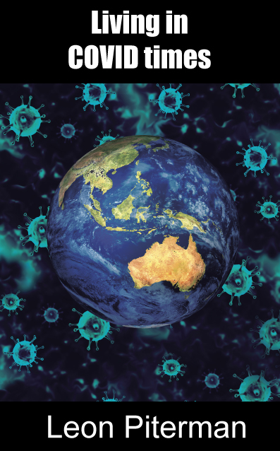</a><br>
            </td>
            <td style="text-align: left;"><a href="eberhardCMAAOP.html"></a></td>
            <td style="text-align: right;"><a href="edgartsp.html"> </a><br></td>
          </tr>
        </tbody>
      </table>
      </div>
      </div>
      </div>
      </div>
      <table style="text-align: left; width: 100%;" border="0" cellpadding="0" cellspacing="0">
        <tbody>
          <tr>
            <td style="vertical-align: top;" colspan="2">
            <div style="text-align: center;"><br><br><br><br>
            <br>
            </div>
            </td>
          </tr>
          <tr>
            <td style="text-align: left; vertical-align: top;"><a href="ewingttga.html"></a></td>
            <td style="vertical-align: top;"><big style="font-weight: bold;"><a href="ewingttga.html"><span style="font-family: Helvetica,Arial,sans-serif; color: rgb(153, 0, 0);">Two
That Got Away</span></a></big><br style="font-family: Helvetica,Arial,sans-serif;">
            <big style="font-weight: bold;"><span style="font-family: Helvetica,Arial,sans-serif; color: white;"><a href="ewing.html"><span style="color: white;">Jim
Ewing</span></a><br>
            </span></big><small style="font-family: Helvetica,Arial,sans-serif; color: white;"><big><big><big><b><small><small><small><small><br>
            </small></small></small><br>
            </small></b></big></big></big></small>
            <table style="width: 90%; height: 88px; text-align: left; margin-left: auto; margin-right: auto;" border="0" cellpadding="0" cellspacing="0">
              <tbody>
                <tr>
                  <td>
                  <div style="text-align: justify;"><span style="font-family: Helvetica,Arial,sans-serif;"><big><span style="font-style: italic; font-family: Times New Roman,Times,serif;">The
Boat went almost perpendicular. Thrown full back on her rudder she flew
over the next foamer, fell with a crash into the trough following. Pain
stabbed Russ hipShit, The Package! In the excitement of frenzied
natural forces and frenetic activity of catch and re-baiting within
that fast-risen sea and wind, it had slipped his mind completely.</span></big></span><br>
                  </div>
                  </td>
                </tr>
              </tbody>
            </table>
            <small style="font-family: Helvetica,Arial,sans-serif; color: white;"><big><big><big><b><small><br style="color: black;">
            </small></b></big></big></big></small><span style="font-family: Helvetica,Arial,sans-serif;"><br>
            </span>
            <div style="text-align: left;">
            <div style="text-align: justify;"><span style="font-family: Helvetica,Arial,sans-serif;">&nbsp;&nbsp;&nbsp;
William James 'Walrus' Roses long-term relationship with volatile
ex-erotic dancer Jill has finally turned turtle. As an unsuccessful
actor/author/playwright, he's also had a gutful of The Arts with its
anus-lickers and parasites.</span><small><br>
            </small><span style="font-family: Helvetica,Arial,sans-serif;"></span><small><br>
            </small><span style="font-family: Helvetica,Arial,sans-serif;"></span><span style="font-family: Helvetica,Arial,sans-serif;">&nbsp;&nbsp;&nbsp;
Better a dinkum profession where a bloke's only ambitions are to catch
lobster and avoid drowning. Within a day of arrival in Port Gong the
locals reduce his nickname Walrus to just 'Rus', and he finds work as
a deckie with Possum Wright, eccentric skipper of the local fishing
fleet's smallest vessel.</span><small><br>
            </small><span style="font-family: Helvetica,Arial,sans-serif;"></span><small><br>
            </small><span style="font-family: Helvetica,Arial,sans-serif;">&nbsp;&nbsp;&nbsp;
Possum is a delightful fellow with whom to fish, but Rus has been
warned he can be dangerously erratic. Rus therefore seldom completely
relaxes when they are offshore.</span><small><br>
            </small><span style="font-family: Helvetica,Arial,sans-serif;"></span><small><br>
            </small><span style="font-family: Helvetica,Arial,sans-serif;"></span><span style="font-family: Helvetica,Arial,sans-serif;">&nbsp;&nbsp;&nbsp;
The Southern Ocean is a wondrous but challenging workplace. When its
waters turn murderous it is not the spot to be in a small craft beside
a bloke, by now far more your cobber than your boss, who appears to be
losing his mind.</span><br>
            <big><span style="font-family: Helvetica,Arial,sans-serif;"></span></big></div>
            <big><span style="font-family: Helvetica,Arial,sans-serif;"></span></big></div>
            <big><span style="font-family: Helvetica,Arial,sans-serif;"><br>
            </span></big><br>
            <div style="margin-left: 40px;"><big><span style="font-family: Helvetica,Arial,sans-serif;"><span style="font-family: Times New Roman,Times,serif;"><span style="font-style: italic;">"Characterized by wit, energy,
and sharp perception, his writing is wise and always entertaining."</span></span><span style="font-weight: bold;"></span></span></big><br>
            <big><span style="font-family: Helvetica,Arial,sans-serif;"><span style="font-weight: bold;"></span></span></big></div>
            <div style="text-align: right;"><big><span style="font-family: Helvetica,Arial,sans-serif;">John Clarke</span><br>
            </big></div>
            <big><span style="font-family: Helvetica,Arial,sans-serif;"></span><br>
            </big>
            <div style="margin-left: 40px;"><big><span style="font-family: Helvetica,Arial,sans-serif;"><span style="font-family: Times New Roman,Times,serif;"><span style="font-style: italic;">"In regard to his favourite
theme, the sea, he is better qualified to speak on the subject than
anyone I know."</span></span><span style="font-weight: bold;"></span></span></big><br>
            <big><span style="font-family: Helvetica,Arial,sans-serif;"><span style="font-weight: bold;"></span></span></big></div>
            <div style="text-align: right;"><big><span style="font-family: Helvetica,Arial,sans-serif;">Bruce Pascoe</span><br>
            </big></div>
            <br>
            <div style="text-align: left;">
            <div style="text-align: justify;"><big><span style="font-family: Helvetica,Arial,sans-serif;"></span></big></div>
            </div>
            </td>
          </tr>
          <tr>
            <td colspan="2" rowspan="1"><br>
            </td>
          </tr>
          <tr>
            <td style="vertical-align: top;"><a href="RittmanAndWilsonBSAR.html"></a></td>
            <td style="vertical-align: top;"><big style="font-weight: bold;"><a href="RittmanAndWilsonBSAR.html"><span style="font-family: Helvetica,Arial,sans-serif; color: rgb(153, 0, 0);">Brunswick
Street, Art &amp; Revolution</span></a><br style="font-family: Helvetica,Arial,sans-serif;">
            <span style="font-family: Helvetica,Arial,sans-serif; color: white;"><a href="RittmanAndWilson.html"><span style="color: white;">Anne
Rittman and Maz Wilson</span></a></span></big><br>
            <small style="color: black; font-weight: normal;"><big style="font-family: Arial;"><br>
            <span style="font-style: italic;">It
had to happen. Carnaby Street was the centre of fashion in the 60s. The
70s belonged to Haight-Ashburys flower children. Then in the 80s
Melbourne gave birth to Brunswick Street  epicentre of an emerging
arts movement. Three subcultures  grungers, bohemians and radical
feminists collided and brought forth a dynamic that changed the face of
the inner city. The meteoric rise of Brunswick Street was a cultural
explosion of art, theatre, fashion, grunge, music, drugs, diverse
sexuality, celebrity and politics.</span></big></small><br>
            <div style="text-align: left; margin-left: 200px;"><small style="color: black; font-weight: bold;"><big style="font-family: Arial;">&nbsp;- Maz Wilson</big></small><br style="font-style: italic; font-weight: normal;">
            </div>
            <big style="color: black; font-weight: normal;"><br style="font-weight: normal;">
            </big><small style="color: black; font-weight: normal;"><big style="font-family: Arial;"><span style="font-style: italic; font-weight: bold;">Brunswick
Street, Art &amp; Revolution</span>&nbsp;
is the story of a street that became a culture. Written by Anne Rittman
and Maz Wilson, it consists of a series of interviews and colour
photographs with and of the people who brought about that
transformation. It teems with characters: baristas, hair-cutters,
potters, comedians, painters, singers, poets, restaurateurs and more.</big></small><big style="color: black; font-weight: normal;"><br style="font-weight: normal;">
            <br style="font-weight: normal;">
            </big><small style="color: black; font-weight: normal;"><big style="font-family: Arial;">It
evokes iconic places: the Black Cat, Pigtale Pottery, The Flying
Trapeze, T F Much Ballroom, Bakers, Circus Oz , Scully &amp;
Trombone
and the list goes on.</big></small><big style="color: black; font-weight: normal;"><br style="font-weight: normal;">
            <br style="font-weight: normal;">
            </big><small style="color: black; font-weight: normal;"><big style="font-family: Arial;">It
bursts with visual impact: performances, artworks, architecture and the
Waiters Race for example. Here it is in its true form as a cultural,
social and political history.</big></small><big style="color: black; font-weight: normal;"><br style="font-weight: normal;">
            <br style="font-weight: normal;">
            </big>
            <div style="margin-left: 40px;"><small style="color: black; font-weight: normal; font-style: italic;"><big style="font-family: Arial;">It
was a pioneering spirit which created its own centre of gravity. Early
on the street had a frisson of excitement. Artists rubbing shoulders
with criminals in a quarter acre block. </big></small><br style="font-weight: normal;">
            </div>
            <div style="text-align: left; margin-left: 200px;"><small style="color: black; font-weight: bold;"><big style="font-family: Arial;">- Rod Quantock.</big></small><br style="font-weight: normal;">
            </div>
            <big style="color: black; font-weight: normal;"><br style="font-weight: normal;">
            </big>
            <div style="margin-left: 40px;"><small style="color: black; font-weight: normal; font-style: italic;"><big style="font-family: Arial;">Laughter is the shock absorber
of life! </big></small><br style="font-weight: normal;">
            </div>
            <div style="text-align: left; margin-left: 200px;"><small style="color: black; font-weight: bold;"><big style="font-family: Arial;">- Tim McKew</big></small><br style="font-weight: normal;">
            </div>
            <big style="color: black; font-weight: normal;"><br style="font-weight: normal;">
            </big>
            <div style="margin-left: 40px;"><small style="font-weight: normal;"><big style="font-family: Arial;"><span style="color: black; font-style: italic;">It was love at
first coffee</span>.</big></small><br style="color: black; font-weight: normal;">
            </div>
            <div style="text-align: left; margin-left: 160px;">
            <div style="margin-left: 40px;"><small style="color: black; font-weight: normal;"><small><big style="font-family: Arial;"><big style="font-weight: bold;">- Sandra
Goldbloom Zurbo</big></big></small></small></div>
            </div>
            <br>
            <br>
            <br>
            <span style="font-family: Helvetica,Arial,sans-serif; font-weight: bold;">Available
as an affordable hardback for only $88.00</span><br style="font-family: Helvetica,Arial,sans-serif; font-weight: bold;">
            <br style="font-family: Helvetica,Arial,sans-serif; font-weight: bold;">
            <span style="font-family: Helvetica,Arial,sans-serif; font-weight: bold;">To
order your very own copy:</span><br style="font-family: Helvetica,Arial,sans-serif;">
            <br style="font-family: Helvetica,Arial,sans-serif;">
            <table style="text-align: left; font-family: Helvetica,Arial,sans-serif; width: 100%;" border="0" cellpadding="0" cellspacing="0">
              <tbody>
                <tr>
                  <td style="vertical-align: top;"><span style="font-weight: bold;">Hardback</span></td>
                  <td style="vertical-align: top;"><big><big><big><b><small>
                  <form target="paypal" action="https://www.paypal.com/cgi-bin/webscr" method="post"><input src="https://www.paypal.com/en_AU/i/btn/x-click-but22.gif" name="submit" alt="Make payments with PayPal - it's fast, free and secure!" border="0" height="23" type="image" width="87"><input name="add" value="1" type="hidden"><input name="cmd" value="_cart" type="hidden">
                    <input name="business" value="bpepper@blackpepperpublishing.com" type="hidden"><input name="item_name" value="Brunswick Street, Art and Revolution - HARDBACK" type="hidden"><input name="item_number" value="9781876044961h" type="hidden"><input name="amount" value="88.00" type="hidden"><input name="no_shipping" value="0" type="hidden"> <input name="no_note" value="1" type="hidden">
                    <input name="currency_code" value="AUD" type="hidden"><input name="lc" value="AU" type="hidden"><input name="bn" value="PP-ShopCartBF" type="hidden"></form>
                  </small></b></big></big></big></td>
                  <td style="vertical-align: top;"><big><big><big><b><small>
                  <form target="paypal" action="https://www.paypal.com/cgi-bin/webscr" method="post"><br>
                    <input name="cmd" value="_cart" type="hidden"><input name="business" value="bpepper@blackpepperpublishing.com" type="hidden"><input alt="Make payments with PayPal - it's fast, free and secure!" name="submit" src="https://www.paypal.com/en_AU/i/btn/view_cart.gif" border="0" type="image"><input name="display" value="1" type="hidden">
                  </form>
                  </small></b></big></big></big></td>
                </tr>
              </tbody>
            </table>
            <br style="font-family: Helvetica,Arial,sans-serif;">
            <br style="font-family: Helvetica,Arial,sans-serif;">
            <span style="font-family: Helvetica,Arial,sans-serif; font-weight: bold;">Please
note: postage free within Australia Only</span><br style="font-family: Helvetica,Arial,sans-serif;">
            <br style="font-family: Helvetica,Arial,sans-serif;">
            <span style="font-family: Helvetica,Arial,sans-serif; font-weight: bold;">For
overseas orders: e-mail </span><a style="font-family: Helvetica,Arial,sans-serif; font-weight: bold;" href="mailto:bpepper@blackpepperpublishing.com">bpepper@blackpepperpublishing.com</a><br style="font-family: Helvetica,Arial,sans-serif; font-weight: bold;">
            <span style="font-family: Helvetica,Arial,sans-serif; font-weight: bold;">for
postage costs.</span><br style="font-family: Helvetica,Arial,sans-serif;">
            <br>
            <br>
            <br>
            </td>
          </tr>
          <tr>
            <td style="vertical-align: top;"><a href="pitermantaloiga.html">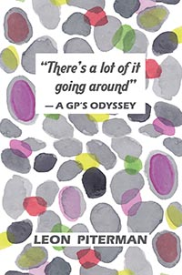</a></td>
            <td style="vertical-align: top;"><big style="font-weight: bold;"><a href="pitermantaloiga.html"><span style="font-family: Helvetica,Arial,sans-serif; color: rgb(153, 0, 0);">There'a
a lot of it going around</span></a></big><br style="font-family: Helvetica,Arial,sans-serif;">
            <big style="font-weight: bold;"><span style="font-family: Helvetica,Arial,sans-serif; color: white;"><a href="piterman.html"><span style="color: white;">Leon
Piterman</span></a><br>
            <br>
            <br>
            </span></big>
            <div style="text-align: center;">
            <div style="text-align: justify;"><big><big style="font-family: Garamond;"><span style="color: black;"><span style="font-style: italic;">Scoring
a hole in one is an achievement for any golfer at any stage in life.
What made Bessies achievement more noteworthy was that she was 84
years old and being treated for cardiac failure and osteoarthritis of
her hips and knees.</span></span></big></big><br>
            <span style="font-family: Helvetica,Arial,sans-serif; color: black;"></span><br>
            <br>
            <span style="font-family: Helvetica,Arial,sans-serif; color: black;">Leon
Piterman weaves many anecdotes about his patients into his critical
account of contemporary General Practice. They are not mere case
studies but show the compassion which is an element</span><span style="font-family: Helvetica,Arial,sans-serif; color: black;">
in the make-up of a good doctor as vital as medical training or
diagnostic skill. Theres a lot of it going around has information,
stories and advocacy. It is a book to enjoy and learn from.</span><br>
            <span style="font-family: Helvetica,Arial,sans-serif; color: black;"></span><br>
            <span style="font-family: Helvetica,Arial,sans-serif; color: black;">I
have often heard it said that whoever is in front of you is your
teacher. If reading these fascinating, touching and often humorous
tales from general practice is anything to go by, Leon Piterman has
accumulated more than a lifetimes wisdom from his patients.</span><br>
            <div style="text-align: right;"><span style="font-family: Helvetica,Arial,sans-serif; color: black;">Associate
Professor Craig Hassed OAM</span><br>
            <span style="font-family: Helvetica,Arial,sans-serif; color: black;"></span><br>
            </div>
            <span style="font-family: Helvetica,Arial,sans-serif; color: black;">I
loved reading A GPs Odyssey. All doctors and medical students will
identify with this precious book from an inspirational GP. It will make
you laugh, cry and celebrate the unique and valuable</span><span style="font-family: Helvetica,Arial,sans-serif; color: black;">
role of the generalist in comprehensive patient care. You will love it
too.</span><br>
            <div style="text-align: right;"><span style="font-family: Helvetica,Arial,sans-serif; color: black;">Clinical
Professor Leanne Rowe AM</span><br>
            <span style="font-family: Helvetica,Arial,sans-serif; color: black;"></span><br>
            </div>
            <span style="font-family: Helvetica,Arial,sans-serif; color: black;">Sometimes
poignant, sometimes hilarious the stories in this GPs odyssey are
filled with what makes general practice uniquepumpkin scones, family
tragedy, those determined to live and the</span><span style="font-family: Helvetica,Arial,sans-serif; color: black;">
stoic humble elderly coming to terms with their fate. Ever the great
educator, Leon Pitermans stories has learnings for us all.</span><br>
            <div style="text-align: right;"><span style="font-family: Helvetica,Arial,sans-serif; color: black;">Professor
Danielle Mazza<br>
            <br>
            </span></div>
            </div>
            <span style="font-family: Helvetica,Arial,sans-serif; color: black;"></span></div>
            <big style="font-weight: bold;"><span style="font-family: Helvetica,Arial,sans-serif; color: white;"><br>
            </span></big></td>
          </tr>
          <tr>
            <td style="vertical-align: top;"><a href="TorresanLR.html">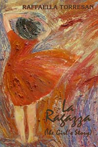</a></td>
            <td style="vertical-align: top;"><big style="font-weight: bold;"><a href="TorresanLR.html"><span style="font-family: Helvetica,Arial,sans-serif; color: rgb(153, 0, 0);">La
Ragazza</span></a></big><br style="font-family: Helvetica,Arial,sans-serif;">
            <big style="font-weight: bold;"><span style="font-family: Helvetica,Arial,sans-serif; color: white;"><a href="Torresan.html"><span style="color: white;">Raffaella
Torresan</span></a><br>
            <br>
            <br>
            </span></big>
            <div style="margin-left: 40px;"><big><span style="color: black; font-style: italic;">You
could buy methedrine ampoules over the counter in Indian chemists, and
soon he was injecting her. The needle changed everything. Pure speed,
she was riding high, too high, and soon she was completely out of
control. She couldnt get enough, once she doped up via the needle. The
methedrine flash high, was what it was all aboutthat timeless,
endless, space-out, that floating, mental stillness, eternity in the
now. Nothing else came close!</span></big><big style="font-weight: bold;"><span style="font-family: Helvetica,Arial,sans-serif; color: white;"></span></big><br>
            <big style="font-weight: bold;"><span style="font-family: Helvetica,Arial,sans-serif; color: white;"></span></big></div>
            <br>
            <br>
            <span style="font-family: Helvetica,Arial,sans-serif;"><span style="font-style: italic;">La Ragazza</span>
is a confessional work of fictionRaffaella Torresans central
character, La Ragazza (The Girl) cant settle in to suburban school
life so she leaves home at age fifteen and hits the mean streets of the
city. She finds it. Sex, drugs, the whole damn thing. The Girl wants to
see The World and The Big Bad World loves nothing more than to lead
innocence astray. By the time. much much later, when The Girl returns
to her origins she has seen the wonderful and terrible sights of the
Far Shores, found love and loss, and the wonderful/terrible world of
drugs. She has learned to sacrifice everything and everyonemainly
herselffor The Hit. Will the needle eat into her soul? Can she see
that The Drug will take everything from you... even life itself?</span><br style="font-family: Helvetica,Arial,sans-serif;">
            <br style="font-family: Helvetica,Arial,sans-serif;">
            <span style="font-family: Helvetica,Arial,sans-serif;">Raffaella
Torresan has written a compelling story that bleeds truth through the
fiction.</span><br style="font-family: Helvetica,Arial,sans-serif;">
            <br style="font-family: Helvetica,Arial,sans-serif;">
            <span style="font-family: Helvetica,Arial,sans-serif;">What
is real? Only you can decide...</span><br style="font-family: Helvetica,Arial,sans-serif;">
            <div style="text-align: right;"><span style="font-family: Helvetica,Arial,sans-serif;">Colin Talbot</span><br>
            </div>
            <br>
            </td>
          </tr>
          <tr>
            <td style="vertical-align: top;"><a href="harrisona.html">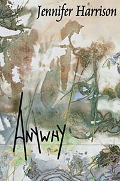</a></td>
            <td style="vertical-align: top;"><big style="font-weight: bold;"><a href="harrisona.html"><span style="font-family: Helvetica,Arial,sans-serif; color: rgb(153, 0, 0);">Anywhy</span></a></big><br style="font-family: Helvetica,Arial,sans-serif;">
            <big style="font-weight: bold;"><span style="font-family: Helvetica,Arial,sans-serif; color: white;"><a href="harrison.html"><span style="color: white;">Jennifer
Harrison</span></a><br>
            <br>
            </span></big>
            <div style="margin-left: 40px;"><span style="font-family: Helvetica,Arial,sans-serif; font-style: italic;">If
birds could fly free from ornithological books</span><br style="font-style: italic;">
            <span style="font-family: Helvetica,Arial,sans-serif; font-style: italic;">and
from watercolour illustrations</span><br style="font-style: italic;">
            <span style="font-family: Helvetica,Arial,sans-serif; font-style: italic;">if
they could fly free from taxidermy</span><br style="font-style: italic;">
            <span style="font-family: Helvetica,Arial,sans-serif; font-style: italic;">agitated
aviaries and roseate oil paintings</span><br style="font-style: italic;">
            <span style="font-family: Helvetica,Arial,sans-serif; font-style: italic;">theyd
leave us more earth-bound than ever before </span><br style="font-style: italic;">
            <span style="font-family: Helvetica,Arial,sans-serif; font-style: italic;">but
we might find a way to rise with them transmogrified</span><br style="font-style: italic;">
            <span style="font-family: Helvetica,Arial,sans-serif; font-style: italic;">and
see for ourselves their world of ultraviolet night</span><br style="font-style: italic;">
            <span style="font-family: Helvetica,Arial,sans-serif; font-style: italic;">Like
the great grey owl,<br>
&nbsp;&nbsp;&nbsp; &nbsp;&nbsp;&nbsp; we might
hear the scratchings of a mouse</span><br style="font-style: italic;">
            <span style="font-family: Helvetica,Arial,sans-serif; font-style: italic;">running
under deep snow</span><br>
            <span style="font-family: Helvetica,Arial,sans-serif;"></span></div>
            <span style="font-family: Helvetica,Arial,sans-serif;"><br>
            </span>
            <div style="text-align: justify;"><span style="font-family: Helvetica,Arial,sans-serif;">Jennifer
Harrisons <span style="font-style: italic;">Anywhy</span>
is exceptional. The depth and lightly carried learning of the author,
as we embrace each poem, is startling. We are philosophically shaken.
Her title <span style="font-style: italic;">Anywhy</span>
may suggest
the cool shrug of whatever but Harrisons neologism is a steady-eyed
consideration of the world: its ecology, its history, its fragilities
and resilience. Her insight is subtle but never vague, inviting our
imagination to consider the inner life of birds, the emotive pull of
hardware, Emma Hamilton, a reverie at Blackwood Village (from which the
title emerges), DNA or Absolute Zero. Above all, it scintillates with
human sorrow and human response.</span><br>
            <span style="font-family: Helvetica,Arial,sans-serif;"></span></div>
            <span style="font-family: Helvetica,Arial,sans-serif;"><br>
            </span>
            <div style="text-align: justify;"><span style="font-family: Helvetica,Arial,sans-serif;"><span style="font-style: italic;">Harrison is a challenging and
significant poet, the quality of whose work needs defining and
celebrating.</span></span><br>
            <span style="font-family: Helvetica,Arial,sans-serif;"></span></div>
            <div style="text-align: right;"><span style="font-family: Helvetica,Arial,sans-serif;">Martin
Duwell</span><br>
            <span style="font-family: Helvetica,Arial,sans-serif;"></span></div>
            <span style="font-family: Helvetica,Arial,sans-serif;"><br>
            </span>
            <div style="text-align: justify;"><span style="font-family: Helvetica,Arial,sans-serif;"><span style="font-style: italic;">With
its subtle but inventive lyrical strategies and masks, poetry like
Jennifer Harrisons addresses poetrywhich means it addresses us,
quietly, as readers who enter its space as observers and who are
active, and who feel its presence within us, not in our faces.</span></span><br>
            <span style="font-family: Helvetica,Arial,sans-serif;"></span></div>
            <div style="text-align: right;"><span style="font-family: Helvetica,Arial,sans-serif;">Philip Salom<br>
            </span><big><span style="font-family: Helvetica,Arial,sans-serif; color: white;"><small><span style="color: black;"></span></small></span></big><br>
            <big><span style="font-family: Helvetica,Arial,sans-serif; color: white;"><small><span style="color: black;"></span></small></span></big></div>
            <big><span style="font-family: Helvetica,Arial,sans-serif; color: white;"><small><span style="color: black;"></span></small></span></big><big style="font-weight: bold;"><span style="font-family: Helvetica,Arial,sans-serif; color: white;"></span></big></td>
          </tr>
          <tr>
            <td colspan="2" rowspan="1"><br>
            </td>
          </tr>
          <tr>
            <td style="vertical-align: top;"><a href="mathewsrfd.html">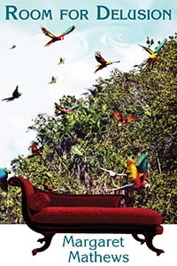</a></td>
            <td style="vertical-align: top;"><big style="font-weight: bold;"><a href="mathewsrfd.html"><span style="font-family: Helvetica,Arial,sans-serif; color: rgb(153, 0, 0);">Room
for Delusion</span></a></big><br style="font-family: Helvetica,Arial,sans-serif;">
            <big style="font-weight: bold;"><span style="font-family: Helvetica,Arial,sans-serif; color: white;"><a href="mathews.htm"><span style="color: white;">Margaret
Mathews</span></a><br>
            <br>
            </span></big>
            <div style="margin-left: 40px;"><big style="font-style: italic;"><span style="font-family: Helvetica,Arial,sans-serif; color: white;"><small><span style="color: black;">Bella.
Isabella Cavani. I whisper her name. It sounds like a hummingbird
fleeing my mouth, and if I shout it, the letter l pulses in my head
and vibrates away. Shes Isabella Cavani. Bella. Shes my therapist.
And Im terrified of losing her.</span></small></span></big><br style="color: black;">
            <big><span style="font-family: Helvetica,Arial,sans-serif; color: white;"></span></big></div>
            <big><span style="font-family: Helvetica,Arial,sans-serif; color: white;"><small><br>
            <br style="color: black;">
            <span style="color: black;">Bronwen&nbsp;
is vulnerable. She consults psychotherapist Isabella Cavani. But who is
Bella? In consultations at the well-heeled therapists home, Bronwen
wonders: is she the younger version of her mother who can listen as her
own mother could not? Or is she the secret woman she desires?</span><br style="color: black;">
            <br style="color: black;">
            <span style="color: black;">Certainly
Bronwen (with an e) will reveal through their sessions the shapes of
her life: her parents, teenage angst, her husband, the kind and gentle
Richard, her children and their times. An exposé of the fantasies and
yearnings of a woman undergoing psychotherapy, the novel offers insight
into the spirited but destructive Bronwen and her quest to overcome
fears and obligations to an ageing, disturbed mother.</span><br style="color: black;">
            <br style="color: black;">
            <span style="color: black;">Told through the
lens of Bronwens lusting for Bella, Margaret Mathews<span style="font-style: italic;"> Room for Delusion</span>
oozes with life.&nbsp; Mathews is brilliant at capturing the panic
involved in some of our everyday acts. You will ache for the ending.<br>
            <br>
            </span></small></span></big></td>
          </tr>
          <tr>
            <td colspan="2" rowspan="1"><br>
            </td>
          </tr>
          <tr>
            <td style="text-align: right; vertical-align: top;"><a href="nichollstht.html"></a></td>
            <td style="vertical-align: top;"><big style="font-weight: bold;"><a href="nichollstht.html"><span style="font-family: Helvetica,Arial,sans-serif; color: rgb(153, 0, 0);">The
Humming Tree</span></a><br>
            </big><span style="font-family: Helvetica,Arial,sans-serif; color: white; font-weight: bold;"><span style="color: black;">Memories of an&nbsp; Eccentric
Childhood</span></span><br style="font-family: Helvetica,Arial,sans-serif;">
            <big style="font-weight: bold;"><span style="font-family: Helvetica,Arial,sans-serif; color: white;"><a href="nichols.html"><span style="color: white;">Bron
Nicholls</span></a><br>
            <br>
            <span style="color: black;"></span><br style="color: black;">
            </span></big>
            <div style="margin-left: 40px;"><big><span style="font-family: Helvetica,Arial,sans-serif; color: white;"><small style="font-style: italic;"><span style="color: black;">But
there was no canopy of flowers in mid-winter, of course. Even the
tough, dark-green, pointed leaves appeared to be unhappy, turning brown
on their edges, perhaps drought-stricken.</span></small></span></big><br style="color: black;">
            <big><span style="font-family: Helvetica,Arial,sans-serif; color: white;"></span></big><br style="color: black;">
            <big><span style="font-family: Helvetica,Arial,sans-serif; color: white;"><span style="color: black;"><small style="font-style: italic;">&nbsp;&nbsp;
I closed my eyes, hugged my knees, and the little tree was in flower
againclouds of apricot-pink blossom, the colour of sunrise, and
buzzing with thousands of wild honey-bees. I was never afraid of the
bees. They ignored me, and the dogs.</small></span></span></big><big style="font-weight: bold;"><span style="font-family: Helvetica,Arial,sans-serif; color: white;"><span style="color: black;"></span></span></big><br>
            <big style="font-weight: bold;"><span style="font-family: Helvetica,Arial,sans-serif; color: white;"><span style="color: black;"></span></span></big></div>
            <big style="font-weight: bold;"><span style="font-family: Helvetica,Arial,sans-serif; color: white;"><span style="color: black;"><br>
            <br>
            </span></span></big><big style="font-style: italic;"><span style="font-family: Helvetica,Arial,sans-serif; color: white;"><span style="color: black;">T</span></span></big><span style="font-family: Helvetica,Arial,sans-serif; color: white;"><span style="color: black;"><span style="font-style: italic;">he
Humming Tree, Memories of an Eccentric Childhood</span> is a
captivating collection of stories about childhood. It is a companion
volume to Bron Nicholls earlier <span style="font-style: italic;">An
Imaginary Mother</span>.
Now the focus is on the father of the family, and his disturbing
transition from an easy-going, jovial man, into somebody inflexible,
harsh and oppressive<br>
            <br>
The time is the decade following
World-War II; the place is the flat, dry country of Northern Victoria,
where John Nicholls built up a small but flourishing subsistence farm,
and then abandoned it, forcing his family into another place, another
life.<br>
            <br>
Writing with both a childs viewpoint and an
adults insight, Bron has created a series of pictures filled with
finely-drawn detail, subtle colours, and lifes unavoidable deep
shadows.<br>
            <br>
            <span style="font-style: italic;">The Humming
Tree</span> is a biography of the rural poor. There is not a
murmur of rancour. It is a fortunate life.<br>
            </span></span><big style="font-weight: bold;"><span style="font-family: Helvetica,Arial,sans-serif; color: white;"><span style="color: black;"></span> </span></big></td>
          </tr>
          <tr>
            <td colspan="2"><br>
            <br>
            </td>
          </tr>
          <tr>
            <td style="text-align: right; vertical-align: top;"><a href="edgart.html">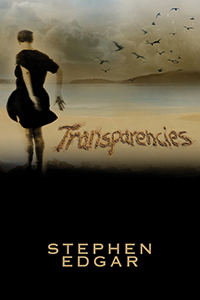</a></td>
            <td style="vertical-align: top;"><big style="font-weight: bold;"><a href="edgart.html"><span style="font-family: Helvetica,Arial,sans-serif; color: rgb(153, 0, 0);">Transparencies</span></a><br style="font-family: Helvetica,Arial,sans-serif;">
            <span style="font-family: Helvetica,Arial,sans-serif; color: white;"><a href="edgar.html"><span style="color: white;">Stephen
Edgar</span></a><br>
            </span></big><br>
            <br>
            <br>
            <div style="margin-left: 80px;">
            <div style="margin-left: 120px;"><span style="font-family: Arial; font-weight: bold; font-style: italic;">On
slender toes</span><br style="font-family: Arial; font-weight: bold; font-style: italic;">
            </div>
            <span style="font-family: Arial; font-weight: bold; font-style: italic;">Down
by the waters edge</span><br style="font-family: Arial; font-weight: bold; font-style: italic;">
            <span style="font-family: Arial; font-weight: bold; font-style: italic;">Two
egrets effortlessly hold their pose</span><br style="font-family: Arial; font-weight: bold; font-style: italic;">
            <span style="font-family: Arial; font-weight: bold; font-style: italic;">In
sedge.</span><br style="font-family: Arial; font-weight: bold; font-style: italic;">
            <br style="font-family: Arial; font-weight: bold; font-style: italic;">
            <span style="font-family: Arial; font-weight: bold; font-style: italic;">They
hold their pose. This show,</span><br style="font-family: Arial; font-weight: bold; font-style: italic;">
            <span style="font-family: Arial; font-weight: bold; font-style: italic;">With
all chinoiseries</span><br style="font-family: Arial; font-weight: bold; font-style: italic;">
            <span style="font-family: Arial; font-weight: bold; font-style: italic;">Appeal,
must be illusory. And so</span><br style="font-family: Arial; font-weight: bold; font-style: italic;">
            <span style="font-family: Arial; font-weight: bold; font-style: italic;">It
is.</span><br style="font-family: Arial; font-weight: bold; font-style: italic;">
            </div>
            <span style="font-family: Arial;"><br>
            <br>
            <br>
            <br>
Stephen Edgars nimble-footed new collection <span style="font-style: italic;">Transparencies</span>
extends his exploration of the worlds visual aspect, both in itself
and as a screen for the minds projections. He questions, in the words
of Denis ODonoghue, the delusion by which we think that reality
coincides at every point with its appearances. </span><br style="font-family: Arial;">
            <br style="font-family: Arial;">
            <span style="font-family: Arial;">The
transparencies of the title are both the daylit images of the natural
world, in all their hallucinatory strangeness and beauty, and the
occasions they offer us to look through them, now into deep time, as in
Day Book and The Mechanicals, now into the parallel universe of the
dead, as in The Returns, or into the world within this one, as in
There. Edgars poems look out and reach in. They probe, even as they
have an exquisite ear. </span><br style="font-family: Arial;">
            <br style="font-family: Arial;">
            <span style="font-family: Arial;">As well as
moving poems on his late mother, to whom the book is dedicated, <span style="font-style: italic;">Transparencies</span> has
many pleasures. One of them is waiting for the delayed rhyme on David
Attenborough.</span><br style="font-family: Arial;">
            <br style="font-family: Arial;">
            <div style="margin-left: 40px;"><span style="font-family: Arial; font-style: italic;">These poems
hold and play with the readers mind and imaginationtelescopically and
microscopically.<br>
            <br style="font-family: Arial;">
            </span></div>
            <div style="text-align: left; margin-left: 240px;"><span style="font-family: Arial;">David Gilbey,&nbsp;<span style="font-style: italic;"> Mascara</span></span><br style="font-family: Arial;">
            </div>
            <br style="font-family: Arial;">
            <span style="font-family: Arial;">What Clive
James said of a single Edgar poem holds true for poems in <span style="font-style: italic;">Transparencies</span>:<br>
            <br style="font-family: Arial;">
            </span><span style="font-family: Arial; font-style: italic;">clear
from moment to moment, and clear in the way that one moment leads to
the next, it accumulates so much clarity that you need dark glasses to
look at it.</span><br style="font-family: Arial;">
            <div style="margin-left: 240px;"><span style="font-family: Arial; font-style: italic;">Poetry
Notebook 2006 - 2014</span><br>
            </div>
            <br>
            </td>
          </tr>
          <tr>
            <td colspan="2" rowspan="1"><br>
            <br>
            </td>
          </tr>
          <tr>
            <td colspan="1" style="vertical-align: top; text-align: right;"><a href="riethtgoe.html"></a><br>
            </td>
            <td style="vertical-align: top;"><big style="font-weight: bold;"><a href="riethtgoe.html"><span style="font-family: Helvetica,Arial,sans-serif; color: rgb(153, 0, 0);">The
Garden of Earth</span></a><br style="font-family: Helvetica,Arial,sans-serif;">
            <span style="font-family: Helvetica,Arial,sans-serif; color: white;"><a href="rieth.html"><span style="color: white;">Homer
Rieth</span></a><br>
            <br>
            </span></big>
            <div style="font-family: Arial;">
            <table align="left" cellpadding="0" cellspacing="0" hspace="0" vspace="0">
              <tbody>
                <tr>
                  <td style="padding: 0cm 9pt;" align="left" valign="top"> <i style="">Out on the river
youll see there are swifts and babblers<br>
&nbsp; &nbsp; &nbsp;and other assorted thieves <o:p></o:p></i> <br>
                  <i style="">all of whom have their own
bush telegraphy, a kind of</i><i style=""><br>
&nbsp; &nbsp; Mors </i><i style="">passing
quietly<o:p></o:p></i> <br>
                  <i style="">from one landmark to the
next, disappearing and<br>
&nbsp; &nbsp;&nbsp; reappearing with wild insouciance at
the waterline<br>
&nbsp; &nbsp; &nbsp;some, in fact, say thats where <o:p></o:p></i> <br>
                  <i style=""><span style="font-size: 10pt;" lang="EN-US"><o:p>&nbsp;</o:p></span></i> <br>
                  <i style="">another life begins, more
secret than you know,<br>
&nbsp; &nbsp;&nbsp; to do with the keeping alive <o:p></o:p></i> <br>
                  <i style="">of memory, all those
residual mysteries that tend<br>
&nbsp; &nbsp;&nbsp; to hang around towns, <o:p></o:p></i> <br>
                  <i style="">theirs are stories the river
dwells on the longest, which<br>
&nbsp; &nbsp;&nbsp; it passe on surreptitiously to creeks,<br>
&nbsp; &nbsp;&nbsp; dams and waterholes<o:p></o:p></i>
                  <p class="MsoNormal" style=""><span style="font-size: 8pt; line-height: 110%;"><o:p>&nbsp;</o:p></span></p>
                  </td>
                </tr>
                <tr>
                  <td><i style="font-family: Arial;">The
Garden of Earth</i><span style="font-family: Arial;"><span style="">&nbsp;
                  </span>is told in Thirty Five
Books. Each canto is a long-breathed sentence that takes you in its
flow. They gather all the hues of nature, history, culture and
philosophy like<span style="">&nbsp; </span>metaphorical
rivers gathering majestic detritus. It invites us to consider the
plenitude of the world, but also how precious and precarious a thing
this is.<o:p></o:p> </span><br style="font-family: Arial;">
                  <span style="font-size: 9pt; font-family: Arial;"><o:p>&nbsp;</o:p></span><span style="font-family: Arial;"> </span><br style="font-family: Arial;">
                  <span style="font-family: Arial;">Homer
Rieths first epic <i style="">Wimmera </i>gave
voice to the history, legend and folklore of the Wimmera region of
north western Victoria, and to ideas of 'place' and 'country' not only
as cultural markers, but as ciphers of an enduring mythos. In his new
companion epic, he turns his gaze to the larger arena of the Murray
Darling, to this oldest of continents more broadly. He offers a vision
of the natural environment and the human world as bound together on a
global scale. <o:p></o:p> </span><br style="font-family: Arial;">
                  <span style="font-size: 9pt; font-family: Arial;"><o:p>&nbsp;</o:p></span><span style="font-family: Arial;"> </span><br style="font-family: Arial;">
                  <i style="font-family: Arial;">The
Garden of Earth</i><span style="font-family: &quot;Garamond&quot;,serif;"><span style="font-family: Arial;"> is a hymn to and argument in
defence of the future of the planet. It is the poet's final assay of
our age-old dream vision of the world, only here it is as something at
once luminous and exceptionally Australian.</span></span></td>
                </tr>
              </tbody>
            </table>
            </div>
            <br>
            <br>
            <big style="font-weight: bold;"><span style="font-family: Helvetica,Arial,sans-serif; color: white;"><br>
            <br>
            <a href="https://www.youtube.com/watch?v=eqgmZB9hs-4" target="_blank">YouTube - Homer Rieth talks of The Garden of
EARTH</a><br>
            <br>
            <br>
            </span></big></td>
          </tr>
          <tr>
            <td style="vertical-align: top;"><a href="McCauleyAndTorresanTSPH.html">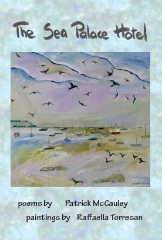</a></td>
            <td><big style="font-weight: bold;"><a href="McCauleyAndTorresanTSPH.html"><span style="font-family: Helvetica,Arial,sans-serif; color: rgb(153, 0, 0);">The
Sea Palace Hotel</span></a><br style="font-family: Helvetica,Arial,sans-serif;">
            <span style="font-family: Helvetica,Arial,sans-serif; color: white;"><a href="McCauleyAndTorresan.html"><span style="color: white;">Patrick
McCauley and Raffaella Torresan</span></a><br>
            <br>
            </span></big><span style="font-family: Helvetica,Arial,sans-serif;">Travel art
can be a way of seeing. In <span style="font-style: italic;">The
Sea Palace Hotel</span> Patrick McCauley poems and Raffaella
Torresans paintings refresh such seeing. Past narratives which persist
in memory and collide with the shock of the present through the viewing
of new unfamiliar landscapes and cultures. The confusion of ideas and
stories which are already with us, merge with the first hand stories
and images never before viewed first hand. This phenomenology allows
the perception of the artist to apply itself differentlyas it seeks to
find its truth or beauty within the new environs. We search for new
words (or colours or lines) to describe what we see en plein air.
Words tumble through each other. Time can be felt to expand and
contract.<span style="font-style: italic;"><br>
            <br>
            </span></span>
            <div style="margin-left: 40px;"><span style="font-family: Helvetica,Arial,sans-serif;"><span style="font-style: italic;">"In a sequence of verbal and
visual responses to the Mumbai stream of
consciousness flowing around them, Mc Cauley's poems and Torresan's
paintings and photographs achieve a kind of syncopation, working as
ciphers of a shared experience, rather than simply being versions of
each other. As a result we are given access, both as readers and as
viewers, to a world that meets us on several dimensions at once."</span></span><br>
            <span style="font-family: Helvetica,Arial,sans-serif;"></span></div>
            <div style="text-align: right;"><span style="font-family: Helvetica,Arial,sans-serif;">Dr Homer
Rieth</span><br>
            </div>
            <big style="font-weight: bold;"><span style="font-family: Helvetica,Arial,sans-serif; color: white;"><br>
            <br>
            </span></big></td>
          </tr>
          <tr>
            <td td="" style="vertical-align: top;"><a href="carrollttital.html">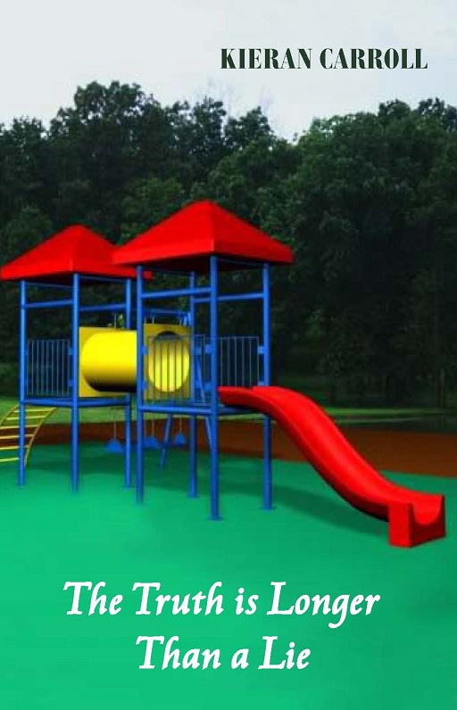</a></td>
            <td style="vertical-align: top; text-align: left;"><big style="font-weight: bold;"><a href="carrollttital.html"><span style="font-family: Helvetica,Arial,sans-serif; color: rgb(153, 0, 0);">The
Truth is Longer than a Lie</span></a><br style="font-family: Helvetica,Arial,sans-serif;">
            <span style="font-family: Helvetica,Arial,sans-serif; color: white;"><a href="Carroll%20K.html"><span style="color: white;">Kieran
Carroll</span></a><br>
            <br>
            </span></big><span style="font-family: Helvetica,Arial,sans-serif;"><span style="font-style: italic;">The Truth is Longer than a Lie</span>
tells the crossover stories of the separate families of Amy and
Spiderman, and of an anonymous child, whose story we hear in voiceover.
It is a family drama.<br>
The adults Ben and Andrea or Rod and Paula are
depraved, complicit or disbelieving. Andreas denial is particularly
affecting. The family culture that Kieran Carrolls drama unveils is
that of child abuse. It is the children we come to know: their shame,
their fear of disclosure, their urge to self-harm, their small window
to healing given by counsellors and by their chance meeting. The
authority of their young voices in Carrolls dialogue will grip your
heart. They are heroic.<br>
            <br>
In their foreword Neerosh Mudaly and
Chris Goddard from Child Abuse Prevention Research Australia, state:
If we are a moral and just society, we must protect children. If we
are to protect children, we have to listen to them. <br>
            <br>
            <span style="font-style: italic;">The
Truth is Longer than a Lie</span> wrenches us into listening.<br>
            <br>
            <br>
"<span style="font-style: italic;">I
was riveted by The Truth is Longer than a Lie.&nbsp; The acting,
staging, choreography, screenplay and directing were first
class.&nbsp;
This is a powerful story, brilliantly portrayed.&nbsp; And
important.&nbsp; I can only hope that it will be presented in other
cities, and one day internationally.</span><br>
            </span>
            <div style="text-align: right;"><span style="font-family: Helvetica,Arial,sans-serif;">Dr Alan
Finkel</span><br>
            </div>
            <big style="font-weight: bold;"><span style="font-family: Helvetica,Arial,sans-serif; color: white;"><br>
            <br>
            </span></big></td>
          </tr>
          <tr>
            <td style="vertical-align: top;"><a href="jeffsc.html">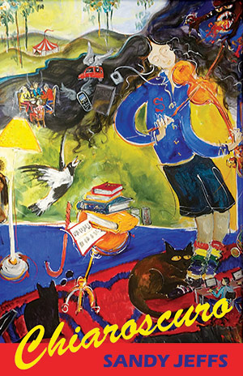</a></td>
            <td><big style="font-weight: bold;"><a href="jeffsc.html"><span style="font-family: Helvetica,Arial,sans-serif; color: rgb(153, 0, 0);">CHIAROSCURO</span></a><br style="font-family: Helvetica,Arial,sans-serif;">
            <span style="font-family: Helvetica,Arial,sans-serif; color: white;"><a style="color: white;" href="jeffs.html">Sandy Jeffs</a><br>
            <br>
            </span></big><span style="font-family: Helvetica,Arial,sans-serif;">The
world is a place full of dark and light as is that of Sandy Jeffs. She
explores this tension with a clarity that is troubled by shadows.
Humour and sadness intermingle in a show that must go on. Popular
culture and parodies of classic poems are used to illuminate the world
for what it is. St Jerome in his study prepares a readers report on
the Bible. Clancy is contacted at theoverflow. com.au. </span><br style="font-family: Helvetica,Arial,sans-serif;">
            <br style="font-family: Helvetica,Arial,sans-serif;">
            <span style="font-family: Helvetica,Arial,sans-serif;">Celebrity
and the economic market are equally dismantled in poems that examine
the absurdity and cravenness of their power. She feels how we are
compromised by our own selfishness when we make a Sophies choice to
buy a book of Rilkes poems rather than a copy of Big Issue from a
homeless vendor. She breaks out from her own darkness and light, her
personal chiaroscuro, to reveal a poet with a keen sense of observation
and a soft sensitivity. It allows her to bring a bristling anger to
bear on social injustice. </span><br>
            <big style="font-weight: bold;"><span style="font-family: Helvetica,Arial,sans-serif; color: white;"><br>
            <br>
            </span></big></td>
          </tr>
          <tr>
            <td style="vertical-align: top; text-align: left; width: 258px; height: 496px;"><a href="http://blackpepperpublishing.com/gouldtps.html">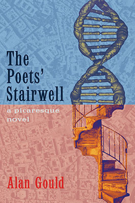</a></td>
            <td style="vertical-align: top; text-align: left; width: 414px; height: 496px;">
            <div style="text-align: left; margin-left: 0px; width: 477px;"><span style="color: rgb(0, 0, 0); font-family: Arial; font-size: medium; font-style: normal; font-variant: normal; font-weight: normal; letter-spacing: normal; line-height: normal; text-align: justify; text-indent: 0px; text-transform: none; white-space: normal; word-spacing: 0px; background-color: rgb(192, 192, 192); display: inline ! important; float: none;"><big><big><small><a href="gouldtps.html"><span style="font-weight: bold; color: rgb(153, 0, 0);">THE POETS'
STAIRWELL</span></a><br>
            <a style="color: white;" href="gould.html"><span style="font-weight: bold;">Alan Gould</span></a></small></big></big></span><span style="color: rgb(0, 0, 0); font-size: medium; font-style: normal; font-variant: normal; font-weight: normal; letter-spacing: normal; line-height: normal; text-align: justify; text-indent: 0px; text-transform: none; white-space: normal; word-spacing: 0px; background-color: rgb(192, 192, 192); display: inline ! important; float: none; font-family: Helvetica,Arial,sans-serif;"><big><big><small><small><small><br>
            <br>
            </small></small></small></big></big></span>
            <div style="text-align: justify; margin-left: 0px; width: 472px;">
            <div style="margin-left: 40px;"><span style="font-family: Helvetica,Arial,sans-serif;"><span style="font-style: italic;">...with
scarcely a disruption to her rhythm, a gaunt Indian woman in purple
sari voided the contents of her nostril onto her hand then cast the
necklace of silvery substance aside. O, Boon was a proper enough
schoolboy, instructed in the use of the British handkerchief, and yet
the gaunt womans action lodged in my mind, an image repellent,
beautiful, troubling.</span></span><br>
            </div>
            <span style="font-family: Helvetica,Arial,sans-serif;"></span><span style="font-family: Helvetica,Arial,sans-serif;"><br>
Claude
Boon and Henry Luck, young poets in quest of their muses, cut a swathe
through the cultural capitals and byways of Europe and Asia towards the
end of the Cold War.<br>
            <br>
            <span style="font-style: italic;">The
Poets
Stairwell</span> revitalises the picaresque novel. Vibrant,
sensuous and layered, it has a tumble of characters and pranks.<br>
            <br>
Anarchist
puckish Beamish, the Isadora Duncan-like Eva, class warrior, Branca, a
libidinous translator of poems with Jelena, her iconoclast daughter,
Luc Courlai a jailed French philosopher, Titus the Yankee acrobat who
cradles his gun like a baby, Mr Hark a saintly Irish funeral director,
Willi a German truck driver versed in Thomas Aquinas and sensible Rhee,
Henrys girlfriendamongst others.<br>
            <br>
            </span><span style="font-family: Helvetica,Arial,sans-serif;" class="userContent"></span><br>
            <span style="font-family: Helvetica,Arial,sans-serif;" class="userContent"></span></div>
            <span style="color: rgb(0, 0, 0); font-family: Arial; font-size: medium; font-style: normal; font-variant: normal; font-weight: normal; letter-spacing: normal; line-height: normal; text-align: justify; text-indent: 0px; text-transform: none; white-space: normal; word-spacing: 0px; background-color: rgb(192, 192, 192); display: inline ! important; float: none;"><big><span style="font-weight: bold;"></span></big></span></div>
            <big><span style="font-weight: bold; font-family: Helvetica,Arial,sans-serif;"></span></big></td>
          </tr>
          <tr>
            <td style="vertical-align: top; text-align: left;"><a href="edgareots.html">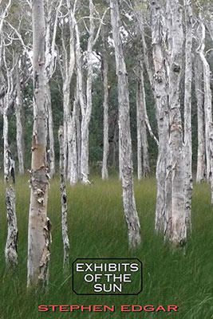</a></td>
            <td style="vertical-align: top; text-align: left;"><big><big><small><a style="font-family: Helvetica,Arial,sans-serif; font-weight: bold;" href="http://blackpepperpublishing.com/edgareots.html">EXHIBITS
OF THE SUN </a><br style="font-family: Helvetica,Arial,sans-serif; font-weight: bold;">
            <a href="http://blackpepperpublishing.com/edgar.html" style="text-decoration: none; color: white; font-family: Helvetica,Arial,sans-serif; font-weight: bold;">Stephen
Edgar</a></small><br>
            </big><br>
            </big>
            <div style="text-align: center;"><span style="font-family: Helvetica,Arial,sans-serif;"><span style="font-weight: bold;">SHORTLISTED FOR THE PRIME
MINISTER'S<br>
LITERARY AWARDS 2015</span></span><a href="http://blackpepperpublishing.com/edgare.html#The_Weekend_Australian_review_of_Eldershaw_by_Stephen_Edgar"><br>
            </a></div>
            <br>
            <br>
            <div style="text-align: justify;"><span style="color: rgb(0, 0, 0); font-family: Arial; font-size: medium; font-style: normal; font-variant: normal; font-weight: normal; letter-spacing: normal; line-height: normal; text-align: justify; text-indent: 0px; text-transform: none; white-space: normal; word-spacing: 0px; background-color: rgb(192, 192, 192); display: inline ! important; float: none;"></span><span style="color: rgb(0, 0, 0); font-family: Arial; font-size: medium; font-style: normal; font-variant: normal; font-weight: normal; letter-spacing: normal; line-height: normal; text-align: justify; text-indent: 0px; text-transform: none; white-space: normal; word-spacing: 0px; background-color: rgb(192, 192, 192); display: inline ! important; float: none;">Look,
look,</span><span style="color: rgb(0, 0, 0); font-family: Arial; font-size: medium; font-style: normal; font-variant: normal; font-weight: normal; letter-spacing: normal; line-height: normal; text-align: justify; text-indent: 0px; text-transform: none; white-space: normal; word-spacing: 0px; background-color: rgb(192, 192, 192); display: inline ! important; float: none;"></span><span style="color: rgb(0, 0, 0); font-family: Arial; font-size: medium; font-style: normal; font-variant: normal; font-weight: normal; letter-spacing: normal; line-height: normal; text-align: justify; text-indent: 0px; text-transform: none; white-space: normal; word-spacing: 0px; background-color: rgb(192, 192, 192); display: inline ! important; float: none;"></span><span style="color: rgb(0, 0, 0); font-family: Arial; font-size: medium; font-style: normal; font-variant: normal; font-weight: normal; letter-spacing: normal; line-height: normal; text-align: justify; text-indent: 0px; text-transform: none; white-space: normal; word-spacing: 0px; background-color: rgb(192, 192, 192); display: inline ! important; float: none;">
exhorts the opening poem of this dazzling new collection. The
discoveries of observation, both physical and intellectual, ravishing
and harrowing, are recounted across a broad sweep of experience. Edgar
returns habitually to the character of light.&nbsp;<span style="font-style: italic;">Exhibits of the Sun</span>
moves from the ghostly Ferris wheel of Saturns rings to the beach
pavilion wrapped in ochre fog during Sydneys dust storm, from the
glimpses of a lovers light-shaped body in the passage of the moon to a
vision of a whole lifetime between one eye blink and the next.
Presiding over all is Walter Benjamins Angel of History, swept away
into the future as he looks back on the unravelled pageant of humanity.</span><br>
            <span style="color: rgb(0, 0, 0); font-family: Arial; font-size: medium; font-style: normal; font-variant: normal; font-weight: normal; letter-spacing: normal; line-height: normal; text-align: justify; text-indent: 0px; text-transform: none; white-space: normal; word-spacing: 0px; background-color: rgb(192, 192, 192); display: inline ! important; float: none;"></span></div>
            <span style="color: rgb(0, 0, 0); font-family: Arial; font-size: medium; font-style: normal; font-variant: normal; font-weight: normal; letter-spacing: normal; line-height: normal; text-align: justify; text-indent: 0px; text-transform: none; white-space: normal; word-spacing: 0px; background-color: rgb(192, 192, 192); display: inline ! important; float: none;"><br>
            </span> <span style="font-style: italic;"></span><span style="color: rgb(0, 0, 0); font-family: Arial; font-size: medium; font-variant: normal; font-weight: normal; letter-spacing: normal; line-height: normal; text-align: justify; text-indent: 0px; text-transform: none; white-space: normal; word-spacing: 0px; background-color: rgb(192, 192, 192); display: inline ! important; float: none; font-style: italic;">On
the short list of the best living practitioners of verse, rhymed or
blank.</span><span style="font-style: italic;"></span><span style="color: rgb(0, 0, 0); font-family: Arial; font-size: medium; font-style: normal; font-variant: normal; font-weight: normal; letter-spacing: normal; line-height: normal; text-align: justify; text-indent: 0px; text-transform: none; white-space: normal; word-spacing: 0px; background-color: rgb(192, 192, 192); display: inline ! important; float: none;"><span style="font-style: italic;"> </span><br>
            </span>
            <div style="text-align: right;"><small style="font-weight: bold;"><span style="font-family: Helvetica,Arial,sans-serif;">Joshua
Mehigan,&nbsp;<span style="font-style: italic;">Poetry
(Chicago)</span></span></small><br>
            </div>
            <span style="color: rgb(0, 0, 0); font-family: Arial; font-size: medium; font-style: normal; font-variant: normal; font-weight: normal; letter-spacing: normal; line-height: normal; text-align: justify; text-indent: 0px; text-transform: none; white-space: normal; word-spacing: 0px; background-color: rgb(192, 192, 192); display: inline ! important; float: none;"></span><br>
            <span style="font-style: italic;"></span><span style="color: rgb(0, 0, 0); font-family: Arial; font-size: medium; font-variant: normal; font-weight: normal; letter-spacing: normal; line-height: normal; text-align: justify; text-indent: 0px; text-transform: none; white-space: normal; word-spacing: 0px; background-color: rgb(192, 192, 192); display: inline ! important; float: none; font-style: italic;">They
said of his last book&nbsp;Eldershaw: a brilliant piece of uncanny</span><span style="font-style: italic;"></span><span style="color: rgb(0, 0, 0); font-family: Arial; font-size: medium; font-variant: normal; font-weight: normal; letter-spacing: normal; line-height: normal; text-align: justify; text-indent: 0px; text-transform: none; white-space: normal; word-spacing: 0px; background-color: rgb(192, 192, 192); display: inline ! important; float: none; font-style: italic;">
fiction&amp; alive and convincing at every point, crackling with
engagement
and intensity.</span><span style="font-style: italic;"></span><span style="color: rgb(0, 0, 0); font-family: Arial; font-size: medium; font-style: normal; font-variant: normal; font-weight: normal; letter-spacing: normal; line-height: normal; text-align: justify; text-indent: 0px; text-transform: none; white-space: normal; word-spacing: 0px; background-color: rgb(192, 192, 192); display: inline ! important; float: none;"><span style="font-style: italic;"> </span><br>
            </span>
            <div style="text-align: right; font-style: italic; font-family: Helvetica,Arial,sans-serif; font-weight: bold;"><small>Martin
Duwell,&nbsp;Australian
Poetry Review<br>
            </small></div>
            <br>
            <span style="color: rgb(0, 0, 0); font-family: Arial; font-size: medium; font-style: normal; font-variant: normal; font-weight: normal; letter-spacing: normal; line-height: normal; text-align: justify; text-indent: 0px; text-transform: none; white-space: normal; word-spacing: 0px; background-color: rgb(192, 192, 192); display: inline ! important; float: none;"></span><span style="font-style: italic;"></span><span style="color: rgb(0, 0, 0); font-family: Arial; font-size: medium; font-variant: normal; font-weight: normal; letter-spacing: normal; line-height: normal; text-align: justify; text-indent: 0px; text-transform: none; white-space: normal; word-spacing: 0px; background-color: rgb(192, 192, 192); display: inline ! important; float: none; font-style: italic;">[A]
wonderful love poem and elegy&amp; [of] almost unbearable poignancy.
The
final dateless narrative, The Pool</span><span style="font-style: italic;"></span><span style="color: rgb(0, 0, 0); font-family: Arial; font-size: medium; font-variant: normal; font-weight: normal; letter-spacing: normal; line-height: normal; text-align: justify; text-indent: 0px; text-transform: none; white-space: normal; word-spacing: 0px; background-color: rgb(192, 192, 192); display: inline ! important; float: none; font-style: italic;">,
is a high point of Australian poetry.</span><span style="font-style: italic;"></span><span style="color: rgb(0, 0, 0); font-family: Arial; font-size: medium; font-style: normal; font-variant: normal; font-weight: normal; letter-spacing: normal; line-height: normal; text-align: justify; text-indent: 0px; text-transform: none; white-space: normal; word-spacing: 0px; background-color: rgb(192, 192, 192); display: inline ! important; float: none;"><span style="font-style: italic;"> </span></span><span style="color: rgb(0, 0, 0); font-family: Arial; font-size: medium; font-style: normal; font-variant: normal; font-weight: normal; letter-spacing: normal; line-height: normal; text-align: justify; text-indent: 0px; text-transform: none; white-space: normal; word-spacing: 0px; background-color: rgb(192, 192, 192); display: inline ! important; float: none;"><br>
            </span>
            <div style="text-align: right;"><span style="color: rgb(0, 0, 0); font-family: Arial; font-size: medium; font-style: normal; font-variant: normal; font-weight: normal; letter-spacing: normal; line-height: normal; text-align: justify; text-indent: 0px; text-transform: none; white-space: normal; word-spacing: 0px; background-color: rgb(192, 192, 192); display: inline ! important; float: none;"><small><span style="font-weight: bold; font-style: italic;">Geoffrey
Lehmann,&nbsp;</span></small><span style="font-style: italic;"><small><span style="font-weight: bold; font-style: italic;">The
Weekend Australian</span></small></span></span><br>
            <span style="color: rgb(0, 0, 0); font-family: Arial; font-size: medium; font-style: normal; font-variant: normal; font-weight: normal; letter-spacing: normal; line-height: normal; text-align: justify; text-indent: 0px; text-transform: none; white-space: normal; word-spacing: 0px; background-color: rgb(192, 192, 192); display: inline ! important; float: none;"><span style="font-style: italic;"></span></span></div>
            <span style="color: rgb(0, 0, 0); font-family: Arial; font-size: medium; font-style: normal; font-variant: normal; font-weight: normal; letter-spacing: normal; line-height: normal; text-align: justify; text-indent: 0px; text-transform: none; white-space: normal; word-spacing: 0px; background-color: rgb(192, 192, 192); display: inline ! important; float: none;"><span style="font-style: italic;"><br>
            <br>
            <br>
            </span></span></td>
          </tr>
          <tr>
            <td style="vertical-align: top; text-align: left;"><a href="colquhounthi.html"></a></td>
            <td style="vertical-align: top; text-align: left;"><big><big><small><a style="font-family: Helvetica,Arial,sans-serif; font-weight: bold;" href="colquhounthi.html">THICKER
THAN WATER </a><br style="font-family: Helvetica,Arial,sans-serif; font-weight: bold;">
            <a href="colquhoun.html" style="text-decoration: none; color: white; font-family: Helvetica,Arial,sans-serif; font-weight: bold;">Judith
Colquhoun</a></small><br>
            </big><br>
            </big><span style="color: rgb(0, 0, 0); font-family: Arial; font-size: medium; font-style: normal; font-variant: normal; font-weight: normal; letter-spacing: normal; line-height: normal; text-align: justify; text-indent: 0px; text-transform: none; white-space: normal; word-spacing: 0px; background-color: rgb(192, 192, 192); display: inline ! important; float: none;">As
her mother Kate lay dying, Lucy OConnell had learnt of a rape
committed in Carlton by a young Italian boy. Not the best introduction
to the parent she had never known and, yes, it was a long time ago, but
Lucy believes it is never too late for justice.</span> <span style="color: rgb(0, 0, 0); font-family: Arial; font-size: medium; font-style: normal; font-variant: normal; font-weight: normal; letter-spacing: normal; line-height: normal; text-align: justify; text-indent: 0px; text-transform: none; white-space: normal; word-spacing: 0px; background-color: rgb(192, 192, 192); display: inline ! important; float: none;">Wary
of the amorous Stefanos assistance, she battles her way through
Italian bureaucracy and finally traces her father, Paolo Esposito, to
his restaurant by a beach in southern Italy. There she meets his wife
Silvana and her own half-siblings: cheeky Andrea, studious Chiara,
scatty Rosaria.</span> <span style="color: rgb(0, 0, 0); font-family: Arial; font-size: medium; font-style: normal; font-variant: normal; font-weight: normal; letter-spacing: normal; line-height: normal; text-align: justify; text-indent: 0px; text-transform: none; white-space: normal; word-spacing: 0px; background-color: rgb(192, 192, 192); display: inline ! important; float: none;">She
lives an uneasy lie with this new family. She obsesses over how to
punish her father without hurting the others. Violent forces gather.
Still she ignores the friends, who insist that penitence can be more
real than a mumbled rosary might suggest. That la vendetta is not the
work of gods but of devils.<br>
            <br>
            <br>
            </span></td>
          </tr>
          <tr>
            <td style="vertical-align: top; text-align: left; width: 222px;"><a href="turnerw.html">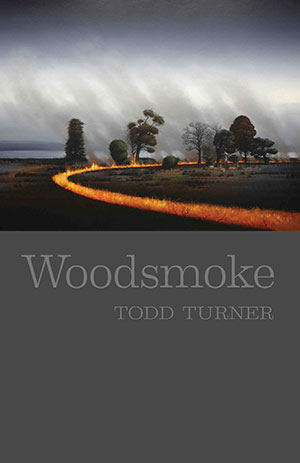</a></td>
            <td style="vertical-align: top; text-align: left; width: 494px; font-family: Helvetica,Arial,sans-serif;"><big style="color: rgb(153, 0, 0);"><span style="text-decoration: none; font-weight: bold;"><a href="turnerw.html">WOODSMOKE</a> &nbsp; </span></big><br>
            <a href="turner.html"><big><span style="text-decoration: none; color: white; font-weight: bold;">Todd
Turner</span></big></a><br style="color: rgb(0, 0, 0); font-size: medium; font-style: normal; font-variant: normal; font-weight: normal; letter-spacing: normal; line-height: normal; text-align: left; text-indent: 0px; text-transform: none; white-space: normal; word-spacing: 0px;">
            <br style="color: rgb(0, 0, 0); font-size: medium; font-style: normal; font-variant: normal; font-weight: normal; letter-spacing: normal; line-height: normal; text-align: left; text-indent: 0px; text-transform: none; white-space: normal; word-spacing: 0px;">
            <div style="color: rgb(0, 0, 0); font-size: medium; font-style: normal; font-variant: normal; font-weight: normal; letter-spacing: normal; line-height: normal; text-indent: 0px; text-transform: none; white-space: normal; word-spacing: 0px; text-align: justify;">
            <div style="text-align: left;"><span style="text-decoration: none;">Todd Turner</span>&nbsp;writes
a poetry of unfashionable warmth.&nbsp;<span style="font-style: italic;">Woodsmoke</span>,
which is
an occasional motif throughout the book, refers to the ancient resins
which fire draws upon in burning. The smoke is the signal, the
equivalent of the poem. His unforced measured language yields deeply
moving poemswhether on the death of a brother or the loss of market
gardens. This is what a modern popular poet should read like. It is
simple but takes a daring amount of craft to get there.</div>
            </div>
            <div style="color: rgb(0, 0, 0); font-size: medium; font-variant: normal; font-weight: normal; letter-spacing: normal; line-height: normal; text-indent: 0px; text-transform: none; white-space: normal; word-spacing: 0px; text-align: left; font-style: italic;"><br>
            </div>
            <div style="color: rgb(0, 0, 0); font-size: medium; font-style: normal; font-variant: normal; font-weight: normal; letter-spacing: normal; line-height: normal; text-align: left; text-indent: 0px; text-transform: none; white-space: normal; word-spacing: 0px; margin-left: 40px;"><span style="font-style: italic;">Todd Turner has produced a body
of poems remarkable for the rich brocade of their language, their hard
won lines, their hammered beauty. This is a poet who brings his work
close to worship, who looks at the world and returns it clarified and
finessed through his painstaking and elegant craftsmanship. Patience
and a belief in the transformative power of poetry are at the heart of
this most impressive debut volume.</span> </div>
            <div style="color: rgb(0, 0, 0); font-size: medium; font-style: normal; font-variant: normal; font-weight: normal; letter-spacing: normal; line-height: normal; text-align: left; text-indent: 0px; text-transform: none; white-space: normal; word-spacing: 0px;">
            <div style="text-align: right;"><small style="font-weight: bold; font-style: italic;"><span style="text-decoration: none;"><br>
Judith Beveridge</span><br>
            </small><br>
            </div>
            </div>
            <div style="text-align: left; margin-left: 40px;"><span style="font-style: italic;">In Todd Turners Woodsmoke
memory is a potent force at work. His ability to delight and disturb,
often within the one line, gives these poems a vibrant, edgy quality
that leaves us with a sense of heightened expectancy and urgency.</span>
            </div>
            <div style="text-align: right;"><small style="font-weight: bold; font-style: italic;"><span style="text-decoration: none;">Anthony Lawrence</span><br>
            </small><br style="font-style: italic;">
            </div>
            <div style="text-align: left; margin-left: 40px;"><span style="font-style: italic;">Turners
language is at times rich with the savour of earth, stone, wood, at
times as weightless as light falling over a field, which passes for
benediction.</span> </div>
            <div style="text-align: right;"><span style="text-decoration: none;"><small style="font-weight: bold; font-style: italic;">Stephen Edgar<br>
            </small><br>
            </span>
            <div style="text-align: left;"><br>
            <br>
            <span style="text-decoration: none;"></span></div>
            <span style="text-decoration: none;"></span></div>
            </td>
          </tr>
          <tr>
            <td style="vertical-align: top; text-align: left; width: 222px;">
            <div style="text-align: center;"><a href="fischerpof.html">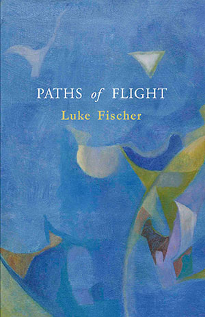</a><br>
            </div>
            <br>
            <br>
            </td>
            <td style="vertical-align: top; text-align: left; width: 494px;"><big><a style="text-decoration: none; font-family: Helvetica,Arial,sans-serif; font-weight: bold;" href="http://blackpepperpublishing.com/fischerpof.html">PATHS
OF FLIGHT</a></big><small><br>
            </small><span style="color: rgb(0, 0, 0); font-family: Arial; font-size: medium; font-style: normal; font-variant: normal; letter-spacing: normal; line-height: normal; text-align: left; text-indent: 0px; text-transform: none; white-space: normal; word-spacing: 0px; font-weight: bold;"><big><big><small><span style="color: white;"><span class="Apple-converted-space"></span><a href="http://blackpepperpublishing.com/fischer.html" style="text-decoration: none; color: white;">Luke Fischer</a></span></small><span style="color: white;"></span></big></big></span><br>
            <span style="color: rgb(0, 0, 0); font-family: Arial; font-size: medium; font-style: normal; font-variant: normal; letter-spacing: normal; line-height: normal; text-align: left; text-indent: 0px; text-transform: none; white-space: normal; word-spacing: 0px; font-weight: bold;"></span><big style="color: rgb(0, 0, 0); font-family: Arial; font-style: normal; font-variant: normal; font-weight: normal; letter-spacing: normal; line-height: normal; text-align: left; text-indent: 0px; text-transform: none; white-space: normal; word-spacing: 0px;"><big><span style="color: white;"></span></big></big><br>
            <big style="color: rgb(0, 0, 0); font-family: Arial; font-style: normal; font-variant: normal; font-weight: normal; letter-spacing: normal; line-height: normal; text-align: left; text-indent: 0px; text-transform: none; white-space: normal; word-spacing: 0px;"><big><span style="color: white;"><small style="color: black;"><small>An
assured new poet sprung fully formed in his first collection.<br>
            <br>
            </small></small></span></big></big><big style="color: rgb(0, 0, 0); font-family: Arial; font-style: normal; font-variant: normal; font-weight: normal; letter-spacing: normal; line-height: normal; text-align: left; text-indent: 0px; text-transform: none; white-space: normal; word-spacing: 0px;"><big><span style="color: white;"></span></big></big>
            <div style="color: rgb(0, 0, 0); font-family: Arial; font-size: medium; font-variant: normal; font-weight: normal; letter-spacing: normal; line-height: normal; text-align: left; text-indent: 0px; text-transform: none; white-space: normal; word-spacing: 0px; font-style: italic; margin-left: 40px;">Luke
Fischers poems startle me to wake again, to wake not only to the
thriving details of the worlds surrounding us but to the power of
language to reveal the music simmering and alive in every moment.<span class="Apple-converted-space">&nbsp;</span> </div>
            <div style="color: rgb(0, 0, 0); font-family: Arial; font-size: medium; font-variant: normal; letter-spacing: normal; line-height: normal; text-indent: 0px; text-transform: none; white-space: normal; word-spacing: 0px; text-align: right; font-weight: bold; font-style: italic;"><small>Pattiann
Rogers</small> </div>
            <br style="color: rgb(0, 0, 0); font-family: Arial; font-size: medium; font-style: normal; font-variant: normal; font-weight: normal; letter-spacing: normal; line-height: normal; text-align: left; text-indent: 0px; text-transform: none; white-space: normal; word-spacing: 0px;">
            <div style="color: rgb(0, 0, 0); font-family: Arial; font-size: medium; font-style: normal; font-variant: normal; font-weight: normal; letter-spacing: normal; line-height: normal; text-align: left; text-indent: 0px; text-transform: none; white-space: normal; word-spacing: 0px; margin-left: 40px;"><i>His
lines fall as calmly and elegantly as snow, layer upon layer, and are
just as transformative in their beauty.</i><i> </i></div>
            <div style="color: rgb(0, 0, 0); font-family: Arial; font-size: medium; font-variant: normal; letter-spacing: normal; line-height: normal; text-indent: 0px; text-transform: none; white-space: normal; word-spacing: 0px; text-align: right; margin-left: 40px; font-weight: bold; font-style: italic;"><small><br>
Judith
Beveridge </small></div>
            <br style="color: rgb(0, 0, 0); font-family: Arial; font-size: medium; font-style: normal; font-variant: normal; font-weight: normal; letter-spacing: normal; line-height: normal; text-align: left; text-indent: 0px; text-transform: none; white-space: normal; word-spacing: 0px;">
            <div style="margin-left: 40px;"><i style="font-family: Helvetica,Arial,sans-serif;">A&nbsp;gaze
that renders things present to us in new ways.</i><span style="font-style: italic; font-family: Helvetica,Arial,sans-serif;"></span><br>
            <span style="font-style: italic; font-family: Helvetica,Arial,sans-serif;"></span></div>
            <div style="text-align: right;"><span style="font-style: italic; font-family: Helvetica,Arial,sans-serif;"><small style="font-weight: bold;">Kevin
Hart</small><br>
            </span><br>
            <br>
            <span style="font-style: italic; font-family: Helvetica,Arial,sans-serif;"></span></div>
            </td>
          </tr>
          <tr>
            <td style="vertical-align: top; text-align: center;"><a href="albistonthojl.html"><br>
            </a></td>
            <td style="vertical-align: top; text-align: left; font-family: Helvetica,Arial,sans-serif;"><big><a href="http://blackpepperpublishing.com/albistonthojl.html" style="text-decoration: none; font-weight: bold;"><br>
            </a></big>
            <div style="color: rgb(0, 0, 0); font-size: medium; font-style: normal; font-variant: normal; font-weight: normal; letter-spacing: normal; line-height: normal; text-indent: 0px; text-transform: none; white-space: normal; word-spacing: 0px; text-align: right;"><small style="font-weight: bold; background-color: white; font-family: Helvetica,Arial,sans-serif;"><a href="index.html#top">Back to top</a></small><br>
            </div>
            </td>
          </tr>
          <tr>
            <td colspan="2" style="vertical-align: top; text-align: left;"><br>
            <br>
            <table style="width: 100%; text-align: left; margin-left: auto; margin-right: auto;" border="0" cellpadding="2" cellspacing="2">
              <tbody>
                <tr>
                  <td style="background-color: black; text-align: center; vertical-align: middle;"><big><big><span style="font-weight: bold; font-style: italic; color: white; font-family: Arial;">BESTSELLERS</span></big></big></td>
                </tr>
              </tbody>
            </table>
            <br>
            <br>
            <br>
            </td>
          </tr>
          <tr>
            <td style="vertical-align: top; text-align: center;"><a href="edgare.html">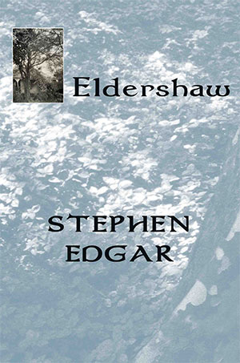</a><br>
            <br>
            <br>
            <br>
            </td>
            <td style="vertical-align: top; text-align: left; font-family: Helvetica,Arial,sans-serif;">
            <big><big><small><a style="font-family: Helvetica,Arial,sans-serif; font-weight: bold;" href="http://blackpepperpublishing.com/edgare.html">ELDERSHAW </a><br style="font-family: Helvetica,Arial,sans-serif; font-weight: bold;">
            <a href="http://blackpepperpublishing.com/edgar.html" style="text-decoration: none; color: white; font-family: Helvetica,Arial,sans-serif; font-weight: bold;">Stephen
Edgar</a><br>
            <br>
            </small></big></big><span style="font-family: Helvetica,Arial,sans-serif;">A
childrens game in an overgrown garden is the first hint of a
troubling presence in the old house Eldershaw. But is the haunting a
memory of the past inscribed in the stonework or a discord the
occupants have brought with them?</span><br style="font-family: Helvetica,Arial,sans-serif;">
            <br style="font-family: Helvetica,Arial,sans-serif;">
            <span style="font-family: Helvetica,Arial,sans-serif;">At
the heart of Stephen Edgars compelling new collection are three
interlinked narrative poems ranging forwards and backwards in time from
the Second World War to the present day. Drawing on personal
experience, reimagined and transformed through the lens of fiction,
they enact those charged episodes which shape and scar the lives of
several characters. From the dim rooms of Eldershaw, to the
recollected infernos of war, to the uncanny waters of a seaside pool,
these narratives affect us with a moving and haunting power.<br>
            <br>
            </span><span style="color: rgb(0, 0, 0); font-family: Arial; font-size: medium; font-style: normal; font-variant: normal; font-weight: normal; letter-spacing: normal; line-height: normal; text-align: justify; text-indent: 0px; text-transform: none; white-space: normal; word-spacing: 0px; background-color: rgb(192, 192, 192); display: inline ! important; float: none;"><big><span style="font-weight: bold;">A Co-winner of the Colin Roderick
Award</span></big></span><span style="color: rgb(0, 0, 0); font-family: Arial; font-size: medium; font-style: normal; font-variant: normal; font-weight: normal; letter-spacing: normal; line-height: normal; text-align: justify; text-indent: 0px; text-transform: none; white-space: normal; word-spacing: 0px; background-color: rgb(192, 192, 192); display: inline ! important; float: none;"><span style="font-weight: bold;"></span><span style="font-weight: bold;"></span></span><br>
            <span style="color: rgb(0, 0, 0); font-family: Arial; font-size: medium; font-style: normal; font-variant: normal; font-weight: normal; letter-spacing: normal; line-height: normal; text-align: justify; text-indent: 0px; text-transform: none; white-space: normal; word-spacing: 0px; background-color: rgb(192, 192, 192); display: inline ! important; float: none;"></span>
            <span style="color: rgb(0, 0, 0); font-family: Arial; font-size: medium; font-style: normal; font-variant: normal; font-weight: normal; letter-spacing: normal; line-height: normal; text-align: justify; text-indent: 0px; text-transform: none; white-space: normal; word-spacing: 0px; background-color: rgb(192, 192, 192); display: inline ! important; float: none;"></span><span style="color: rgb(0, 0, 0); font-family: Arial; font-size: medium; font-style: normal; font-variant: normal; font-weight: normal; letter-spacing: normal; line-height: normal; text-align: justify; text-indent: 0px; text-transform: none; white-space: normal; word-spacing: 0px; background-color: rgb(192, 192, 192); display: inline ! important; float: none;">(Stephen
Romei comments here in <a style="font-style: italic;" href="http://www.theaustralian.com.au/arts/review/ashley-hay-and-stephen-edgar-win-colin-roderick-award/story-fn9n8gph-1227093901123">The
Australian)</a><br>
            <br>
            </span><a style="font-weight: bold; font-family: Helvetica,Arial,sans-serif;" href="http://blackpepperpublishing.com/edgare.html">Eldershaw</a><span style="font-weight: bold; font-family: Helvetica,Arial,sans-serif;"> </span><span style="font-family: Helvetica,Arial,sans-serif;">has been
short-listed
for the</span><span style="font-family: Helvetica,Arial,sans-serif;">
Prime
Minister's Literary Award for Poetry</span><big style="color: rgb(0, 0, 0); font-style: normal; font-variant: normal; font-weight: normal; letter-spacing: normal; line-height: normal; text-align: left; text-indent: 0px; text-transform: none; white-space: normal; word-spacing: 0px; font-family: Helvetica,Arial,sans-serif;"><big><span style="color: white;"><small style="color: black;"><small><a href="http://www.queenslandliteraryawards.com/slq-poetry-collection---judith-wright-calanthe-award-shortlist.html" style="text-decoration: none; font-style: italic;">. This
what the
judges said:</a><br>
            <br>
            <br>
            <br>
            </small></small></span></big></big></td>
          </tr>
          <tr>
            <td style="vertical-align: top; text-align: left;"><a href="albistonthojl.html">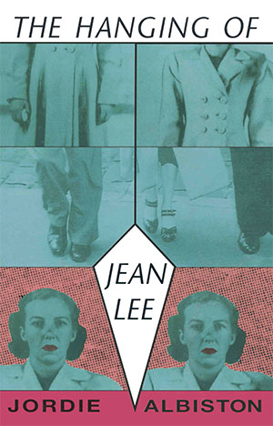</a></td>
            <td style="vertical-align: top; text-align: left;"><big style="font-family: Helvetica,Arial,sans-serif;"><a href="http://blackpepperpublishing.com/albistonthojl.html" style="text-decoration: none; font-weight: bold;">THE
HANGING OF JEAN LEE</a></big><span style="font-weight: bold; font-family: Helvetica,Arial,sans-serif;">&nbsp;</span><br style="font-weight: bold; font-family: Helvetica,Arial,sans-serif;">
            <a style="color: white; font-family: Helvetica,Arial,sans-serif; font-weight: bold;" href="albiston.html">Jordie
Albiston</a><br style="font-weight: bold; font-family: Helvetica,Arial,sans-serif;">
            <br style="font-family: Helvetica,Arial,sans-serif;">
            <span style="font-family: Helvetica,Arial,sans-serif;">Prize-winning
poet Jordie Albistons third book is dramatic. It spotlights the crunch
times in the life of Jean Lee 1919-1951 from adventurous girl to hanged
woman. It captures the times, the completion of the Harbour Bridge, the
youth culture of the milk bars, the 'overpaid, oversexed, over here
American servicemen during the War, the invasion of petty crims for the
1949 Melbourne Cup won by Faxzami. Above all, it understands. Jean's
last God-troubled speeches raise her mean life to suburban tragedy.</span><br style="color: rgb(0, 0, 0); font-size: medium; font-style: normal; font-variant: normal; font-weight: normal; letter-spacing: normal; line-height: normal; text-align: left; text-indent: 0px; text-transform: none; white-space: normal; word-spacing: 0px; font-family: Helvetica,Arial,sans-serif;">
            <br style="color: rgb(0, 0, 0); font-size: medium; font-style: normal; font-variant: normal; font-weight: normal; letter-spacing: normal; line-height: normal; text-align: left; text-indent: 0px; text-transform: none; white-space: normal; word-spacing: 0px; font-family: Helvetica,Arial,sans-serif;">
            <div style="color: rgb(0, 0, 0); font-size: medium; font-style: normal; font-variant: normal; font-weight: normal; letter-spacing: normal; line-height: normal; text-indent: 0px; text-transform: none; white-space: normal; word-spacing: 0px; text-align: justify; font-family: Helvetica,Arial,sans-serif;"><br>
            <div style="margin-left: 40px;"><span style="font-style: italic;">In this richly magical
procession of poems, Albiston re-imagines how the grim life of Jean Lee
stepped along its course to her execution. The book is a triumph of
grasp and sympathy.</span> </div>
            </div>
            <div style="color: rgb(0, 0, 0); font-size: medium; font-variant: normal; letter-spacing: normal; line-height: normal; text-indent: 0px; text-transform: none; white-space: normal; word-spacing: 0px; font-family: Helvetica,Arial,sans-serif; font-weight: bold; font-style: italic;" align="right"><small>Chris Wallace-Crabbe</small> </div>
            <br style="color: rgb(0, 0, 0); font-size: medium; font-style: normal; font-variant: normal; font-weight: normal; letter-spacing: normal; line-height: normal; text-align: left; text-indent: 0px; text-transform: none; white-space: normal; word-spacing: 0px; font-family: Helvetica,Arial,sans-serif;">
            <div style="color: rgb(0, 0, 0); font-size: medium; font-variant: normal; font-weight: normal; letter-spacing: normal; line-height: normal; text-indent: 0px; text-transform: none; white-space: normal; word-spacing: 0px; text-align: justify; margin-left: 40px; font-style: italic; font-family: Helvetica,Arial,sans-serif;">The
God poems are terrific -
they have unafraidness and tension that is sheer coiled energy. The
Hanging of Jean Lee is strong, its passionate, its truthful and its
complex. And its tremendously disciplined poetry. </div>
            <div style="text-align: right;"><small style="font-weight: bold; font-style: italic;"><a href="http://blackpepperpublishing.com/croggon.html" style="text-decoration: none; font-family: Helvetica,Arial,sans-serif;">Alison
Croggon</a></small><br style="font-family: Helvetica,Arial,sans-serif;">
            </div>
            <br>
            <br>
            </td>
          </tr>
          <tr>
            <td style="vertical-align: top; text-align: center;"><a href="burtonh.html">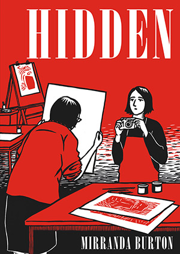</a></td>
            <td style="vertical-align: top; text-align: left;"><big style="font-family: Helvetica,Arial,sans-serif;"><a href="http://blackpepperpublishing.com/burtonh.html" style="text-decoration: none;"><span style="font-weight: bold;">HIDDEN</span></a></big><a href="http://blackpepperpublishing.com/burtonh.html" style="text-decoration: none; font-family: Arial; font-size: medium; font-style: normal; font-variant: normal; font-weight: normal; letter-spacing: normal; line-height: normal; text-align: left; text-indent: 0px; text-transform: none; white-space: normal; word-spacing: 0px;"><small style="font-style: italic;"><span class="Apple-converted-space">&nbsp;</span>-<span class="Apple-converted-space">&nbsp;</span></small></a><small style="color: rgb(0, 0, 0); font-family: Arial; font-variant: normal; font-weight: normal; letter-spacing: normal; line-height: normal; text-align: left; text-indent: 0px; text-transform: none; white-space: normal; word-spacing: 0px; font-style: italic;">A
Graphic Novel</small><br style="color: rgb(0, 0, 0); font-family: Arial; font-size: medium; font-style: normal; font-variant: normal; font-weight: normal; letter-spacing: normal; line-height: normal; text-align: left; text-indent: 0px; text-transform: none; white-space: normal; word-spacing: 0px;">
            <small><a style="color: white;" href="burton.html"><big style="font-family: Arial; font-style: normal; font-variant: normal; font-weight: normal; letter-spacing: normal; line-height: normal; text-align: left; text-indent: 0px; text-transform: none; white-space: normal; word-spacing: 0px;"><big><span style="font-weight: bold;">Mirranda&nbsp;Burton</span></big></big></a></small><br style="color: rgb(0, 0, 0); font-family: Arial; font-size: medium; font-style: normal; font-variant: normal; font-weight: normal; letter-spacing: normal; line-height: normal; text-align: left; text-indent: 0px; text-transform: none; white-space: normal; word-spacing: 0px;">
            <br style="color: rgb(0, 0, 0); font-family: Arial; font-size: medium; font-style: normal; font-variant: normal; font-weight: normal; letter-spacing: normal; line-height: normal; text-align: left; text-indent: 0px; text-transform: none; white-space: normal; word-spacing: 0px;">
            <span style="color: rgb(0, 0, 0); font-family: Arial; font-size: medium; font-variant: normal; font-weight: normal; letter-spacing: normal; line-height: normal; text-align: left; text-indent: 0px; text-transform: none; white-space: normal; word-spacing: 0px; font-style: italic;"></span><span style="color: rgb(0, 0, 0); font-family: Arial; font-size: medium; font-variant: normal; font-weight: normal; letter-spacing: normal; line-height: normal; text-align: left; text-indent: 0px; text-transform: none; white-space: normal; word-spacing: 0px; font-style: italic;"></span><span style="color: rgb(0, 0, 0); font-family: Arial; font-size: medium; font-variant: normal; font-weight: normal; letter-spacing: normal; line-height: normal; text-align: left; text-indent: 0px; text-transform: none; white-space: normal; word-spacing: 0px; font-style: italic;">At
first glance, Mirranda Burton's art room is a hidden world full of
strange eccentric characters and mysterious minds. But stay a while and
in that room you'll find all the joy and sadness of life, the pain and
comfort of community, and the ultimate meaning of art. In Hidden
Mirranda Burton is writing about what matters most, and she does so
with such gentle humanity and wisdom. It is one of the most beautiful
books I have ever read.</span><br style="color: rgb(0, 0, 0); font-family: Arial; font-size: medium; font-style: normal; font-variant: normal; font-weight: normal; letter-spacing: normal; line-height: normal; text-align: left; text-indent: 0px; text-transform: none; white-space: normal; word-spacing: 0px;">
            <div style="color: rgb(0, 0, 0); font-family: Arial; font-size: medium; font-style: normal; font-variant: normal; font-weight: normal; letter-spacing: normal; line-height: normal; text-indent: 0px; text-transform: none; white-space: normal; word-spacing: 0px; text-align: right;"><small>&nbsp;<span class="Apple-converted-space">&nbsp;</span><br>
&nbsp;<big><span class="Apple-converted-space">&nbsp;</span>Dylan
Horrocks, author of<span class="Apple-converted-space">&nbsp;</span></big><span style="font-style: italic;"><big>Hicksville<br>
            <br>
            </big></span></small>
            <div style="text-align: left;"><span style="font-style: italic;">In a simple yet effective visual
style reminiscent of Persepolis but wholly its own - and peppered with
some pictures so vivid as to be photographic - local artist Mirranda
Burton draws on her time spent as an art teacher for those with
intellectual disabilities. Her tales are hopeful, dramatic, always
emotionally involving, and never condescending.</span><br>
            <br>
            <div style="text-align: right;">Fiona Hardy,
Readings Carlton<br>
            <br>
            <br>
            <br>
            </div>
            </div>
            </div>
            </td>
          </tr>
          <tr>
            <td style="text-align: center;" valign="top"><a href="harrisoncnas.html">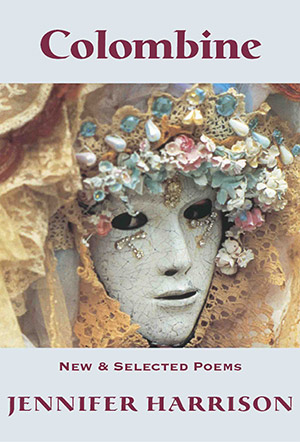</a><br>
            <br>
            <br>
            <br>
            </td>
            <td align="left" valign="top"><big style="font-weight: bold; font-family: Arial;"><a style="font-family: Arial; font-weight: bold;" href="harrisoncnas.html">COLOMBINE</a><big>
            </big></big><big style="font-family: Arial;"><small>New
and Selected Poetry</small><br>
            <big style="color: white;"><span style="font-weight: bold;"><small><a style="color: white;" href="harrison.html">Jennifer
Harrison</a></small><br>
            </span></big></big><span style="font-family: Helvetica,Arial,sans-serif;"><span style="font-style: italic;"><br>
Colombine</span>
unusually contains two sets of ravish new poems, the title sequence and
another called <span style="font-style: italic;">Fugue</span>.
The poems
selected from her previous collections, from the Anne Elder
Award-winning <span style="font-style: italic;">Michelangelo's
Prisoners</span> to her fourth book, <span style="font-style: italic;">Folly
&amp; Grief</span>,
illustrate the depth of her talent.<br>
&nbsp;<br>
            </span>
            <div style="margin-left: 40px;"><span style="font-family: Helvetica,Arial,sans-serif;"><span style="font-style: italic;">Jennifer Harrison
is astonishing. She</span><span style="font-style: italic;">
comes from a place
that was previously</span><span style="font-style: italic;">
unknown</span></span></div>
            <span style="font-family: Helvetica,Arial,sans-serif;"></span>
            <div style="text-align: right;"><span style="font-family: Helvetica,Arial,sans-serif;"><br>
Alan <a href="loney.html">Loney</a><br>
            <br>
            <br>
            <br>
            </span></div>
            </td>
          </tr>
          <tr>
            <td style="text-align: center;" valign="top"><a href="hancocktpg.html"></a><br>
            <br>
            <br>
            </td>
            <td align="left" valign="top"><a href="http://blackpepperpublishing.com/hancocktpg.html" style="text-decoration: none; font-family: Helvetica,Arial,sans-serif; font-weight: bold;">THE
PEASTICK
GIRL</a><br style="font-family: Helvetica,Arial,sans-serif; font-weight: bold;">
            <span style="font-family: Helvetica,Arial,sans-serif; font-weight: bold; color: white;">Susan&nbsp;</span><a href="http://blackpepperpublishing.com/hancock.html" style="text-decoration: none; font-family: Helvetica,Arial,sans-serif; font-weight: bold; color: white;">Hancock</a><br style="font-family: Helvetica,Arial,sans-serif;">
            <span style="font-family: Helvetica,Arial,sans-serif;"><br>
The
story of Teresa Matheson, her sisters Mollie and Cass, and the untimely
and mysterious death of their mother. Teresa has returned to Wellington
after five years in Melbourne where she has written a quest novel for
younger readers, had two affairs, and met the demon
Arkeum.&nbsp;The
Peastick Girl&nbsp;is a
complex tragi-comedy of manners.</span><br style="color: rgb(0, 0, 0); font-size: medium; font-style: normal; font-variant: normal; font-weight: normal; letter-spacing: normal; line-height: normal; text-align: left; text-indent: 0px; text-transform: none; white-space: normal; word-spacing: 0px; font-family: Helvetica,Arial,sans-serif;">
            <span style="font-family: Helvetica,Arial,sans-serif;">&nbsp;</span><br style="color: rgb(0, 0, 0); font-size: medium; font-style: normal; font-variant: normal; font-weight: normal; letter-spacing: normal; line-height: normal; text-align: left; text-indent: 0px; text-transform: none; white-space: normal; word-spacing: 0px; font-family: Helvetica,Arial,sans-serif;">
            <div style="color: rgb(0, 0, 0); font-size: medium; font-variant: normal; font-weight: normal; letter-spacing: normal; line-height: normal; text-align: left; text-indent: 0px; text-transform: none; white-space: normal; word-spacing: 0px; margin-left: 40px; font-family: Helvetica,Arial,sans-serif; font-style: italic;">A
brave, sensuous and wildly original novel 
&nbsp;Ive never read
anything quite like it. </div>
            <div style="color: rgb(0, 0, 0); font-size: medium; font-style: normal; font-variant: normal; font-weight: normal; letter-spacing: normal; line-height: normal; text-indent: 0px; text-transform: none; white-space: normal; word-spacing: 0px; text-align: right; font-family: Helvetica,Arial,sans-serif;"><a style="text-decoration: none;">Helen
Garner<br>
            </a>
            <div style="text-align: left; margin-left: 40px;"><br>
            <span style="font-style: italic;">A brief
summary cant really do
justice to the complexities of this highly gifted novel... All this is
given a lustre and intensity by her precise, musical prose, with its
matchless evocations of the weather and the landscapes around
Wellington and the fugitive subtleties of her characters inner lives.</span>
            </div>
&nbsp;&nbsp;
&nbsp;<a href="http://blackpepperpublishing.com/hancocktpg.html#The_Age_review_The_Peastick_Girl_by_Susan_Hancock" style="text-decoration: none;">Owen Richardson,&nbsp;</a><a href="http://blackpepperpublishing.com/hancocktpg.html#The_Age_review_The_Peastick_Girl_by_Susan_Hancock" style="text-decoration: none;">The Age</a><br>
            <br>
            <br>
            <br>
            <small style="font-weight: bold; background-color: white; font-family: Helvetica,Arial,sans-serif;"><a href="index.html#top">Back to top</a></small></div>
            </td>
          </tr>
        </tbody>
      </table>
      <br>
      <br>
      <br>
      <br>
      </td>
    </tr>
    <tr>
    </tr>
    <tr>
      <td style="width: 255px;" align="left" valign="top"><br>
      </td>
      <td style="width: 699px;" align="left" valign="top">
      <table style="text-align: left; width: 100%;" border="0" cellpadding="0" cellspacing="0">
        <tbody>
          <tr>
            <td style="vertical-align: top; text-align: center;"><a href="nichollsaim.html">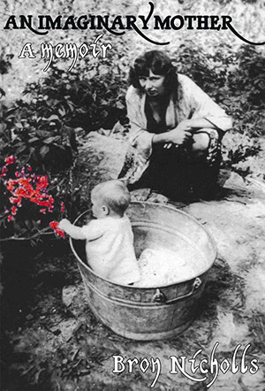</a></td>
            <td style="vertical-align: top; text-align: left; width: 494px;"><a style="color: rgb(153, 0, 0); font-family: Helvetica,Arial,sans-serif;" href="nichollsaim.html"><span style="font-weight: bold;">AN
IMAGINARY MOTHER</span></a><br>
            <div style="text-align: left;"><span style="font-family: Helvetica,Arial,sans-serif; font-weight: bold; color: black;"><span style="color: white;"></span><a href="nicholls.html"><span style="color: white;">Bron
Nicholls</span></a></span></div>
            <br>
            <span style="font-family: Helvetica,Arial,sans-serif;">Bron
was Phyllis Nicholls first child. An Imaginary Mother is an
open-hearted memoir of her mother and their intense relationship over
fifty-six years.<br>
            <br>
Phyllis was a secretive, complex and unpredictable woman. Before her
marriage, Phyllis worked happily as a designer in Vida Turners
pioneering textile company. After World War II, with a young family,
she had to cope with the isolation of a struggling subsistence farm,
the tumult of her husbands conversion to a rigid religion, and her own
increasing mood changes between despair, melancholy and joy.<br>
            <br>
Yet to the end of almost eighty years, Phyll was also a stoic. She saw
her madnesses as the inevitable ups and downs of a full life, to be
worked around with a mixture of courage, stealth, ingenuity and,
whenever possible, with humour. An Imaginary Mother is a portrait in
which the sitter and the painter are both revealed.<br>
            <br>
            <span style="font-weight: bold;"></span></span>
            <div style="margin-left: 40px;"><span style="font-family: Helvetica,Arial,sans-serif; font-style: italic;">This
poignant gem of a memoir</span> </div>
            <div style="text-align: right;"><span style="font-family: Helvetica,Arial,sans-serif;">The
Age</span><span style="font-family: Helvetica,Arial,sans-serif; font-style: italic;"><br>
            <br>
            </span><span style="font-family: Helvetica,Arial,sans-serif; font-style: italic;"></span></div>
            <span style="font-family: Helvetica,Arial,sans-serif; font-style: italic;"> </span>
            <div style="font-style: italic;">
            <div style="margin-left: 40px;"><span style="font-family: Helvetica,Arial,sans-serif;">This
heartrending memoir by Bron Nicholls of her strange mother is hard to
put down</span><span style="font-family: Helvetica,Arial,sans-serif;"></span>
            </div>
            </div>
            <div style="text-align: right;"><span style="font-family: Helvetica,Arial,sans-serif;">Rochford
Street Review<br>
            </span></div>
            <br>
            <br>
            <br>
            </td>
          </tr>
          <tr>
            <td style="width: 222px; text-align: center;" valign="top"><a href="rieth150m.html">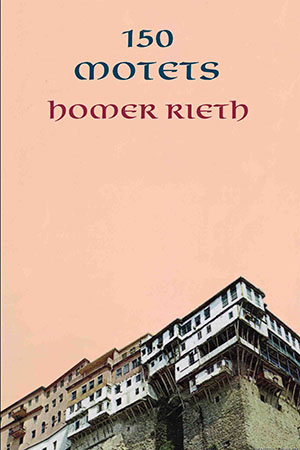</a><br>
            <br>
            <br>
            <br>
            <br>
            </td>
            <td style="vertical-align: top; text-align: left; width: 494px; font-family: Helvetica,Arial,sans-serif;"><big style="color: rgb(153, 0, 0);"><span style="text-decoration: none; font-weight: bold;"></span></big>
            <div style="text-align: right;">
            <div style="text-align: left;">
            <div style="text-align: left;"><span style="font-family: Helvetica,Arial,sans-serif;"><small><a href="rieth150m.html"><big><big style="font-weight: bold;">150 MOTETS</big></big></a><br>
            <a href="rieth.html"><big style="font-weight: bold; color: white;">Homer
Rieth</big></a></small> <br>
            <br>
Motet: a composition adapted to sacred words in the elaborate
polyphonic church style; an emblem. Addressed to and inspired by the
time-honoured figure of a mistress or muse, Homer Rieths sonnets
cascade into each other across rocks of autobiography, memory and
desire. From the young mans yearning for the religious life to the
poets mature ruminations he sings to his American Lola and to us. His
unaccompanied voice becomes its own choir.<br>
            <br>
            </span>
            <div style="margin-left: 40px;"><span style="font-family: Helvetica,Arial,sans-serif; font-style: italic;">Rieths
poems often read like overheard private rhapsodies, in which the arcane
and everyday mingle. He employs an ebullient, rococco language in long,
breathless sentences.</span><br>
            <span style="font-family: Helvetica,Arial,sans-serif;"></span></div>
            <div style="text-align: right;"><span style="font-family: Helvetica,Arial,sans-serif;"><br>
Geoffrey Lehmann &amp; Robert Gray <br>
            <span style="font-style: italic;">Australian
Poetry
Since 1788</span></span><br>
            <span style="font-family: Helvetica,Arial,sans-serif;"></span></div>
            <div style="margin-left: 40px;">
            <div style="margin-left: 40px;"><span style="font-family: Helvetica,Arial,sans-serif; font-style: italic;"><br>
A convincing sense of a lifelong spiritual quest</span><span style="font-family: Helvetica,Arial,sans-serif; font-weight: bold;"><span style="font-style: italic;"></span></span><span style="font-style: italic; font-family: Helvetica,Arial,sans-serif;"></span>
            </div>
            <span style="font-style: italic; font-family: Helvetica,Arial,sans-serif;"></span></div>
            <div style="text-align: right;"><span style="font-style: italic; font-family: Helvetica,Arial,sans-serif;">Australian
Book Review<br>
            </span>
            <div style="text-align: left;"><span style="font-style: italic; font-family: Helvetica,Arial,sans-serif;"></span><span style="font-style: italic; font-family: Helvetica,Arial,sans-serif;"></span></div>
            </div>
            </div>
            <br>
            <br>
            <span style="text-decoration: none;"></span></div>
            <span style="text-decoration: none;"></span></div>
            </td>
          </tr>
          <tr>
            <td style="text-align: center;" valign="top"><a href="santtbt.html">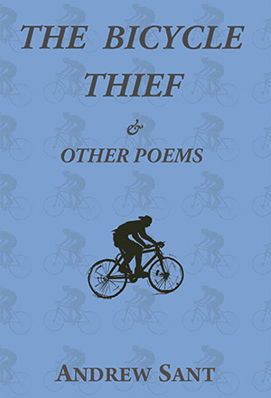</a></td>
            <td align="left" valign="top">
            <div style="text-align: left;"><span style="font-family: Helvetica,Arial,sans-serif;"><big><a href="santtbt.html"><span style="font-weight: bold;">THE
BICYCLE THIEF</span></a></big> &amp; Other Poems<br>
            <a href="sant.html"><span style="font-weight: bold; color: white;">Andrew Sant</span></a></span></div>
            <div style="text-align: left;"><span style="font-family: Helvetica,Arial,sans-serif;"></span><span style="font-family: Helvetica,Arial,sans-serif;"></span><span style="font-family: Helvetica,Arial,sans-serif;"><a href="sant.html"><span style="font-weight: bold; color: white;"></span></a><br>
Energy, natural and man-made, is at the heart of Andrew Sants The
Bicycle Thief &amp; Other Poems - energy released at the speed of
an escaping cyclist or through the planets eruptions and metamorphoses
in geologic time. Either way, here is the second law of thermodynamics
writ large, creation and destruction in a binary tussle. The
mischievous title poem, a fast-moving narrative, is a robust
celebration of good-for-the-planet transport, while elsewhere motor
vehicles depicted in a personal history are drolly seen as harbingers
of an apocalypse. Many poems are monologues that give voice to
characters whose identities are fluid and circumstantial. These are
poems that get about - lively, unfettered and expansive.<br>
            </span>
            <div style="margin-left: 40px;">
            <div style="margin-left: 40px;"><span style="font-family: Helvetica,Arial,sans-serif; font-style: italic;"><br>
            <br>
Classy vehicle for entertaining verse</span><span style="font-family: Helvetica,Arial,sans-serif; font-weight: bold;"></span>
            </div>
            <span style="font-family: Helvetica,Arial,sans-serif; font-weight: bold;"></span></div>
            <div style="text-align: right;"><span style="font-family: Helvetica,Arial,sans-serif;">Sydney
Morning Herald</span><span style="font-family: Helvetica,Arial,sans-serif; font-weight: bold;"></span><br>
            <span style="font-family: Helvetica,Arial,sans-serif; font-weight: bold;"></span></div>
            <span style="font-family: Helvetica,Arial,sans-serif; font-weight: bold;"><br>
            </span>
            <div style="margin-left: 40px;">
            <div style="margin-left: 40px;"><span style="font-family: Helvetica,Arial,sans-serif; font-style: italic;">Its
out on its own. Simply the thing it is will make it live</span><span style="font-family: Helvetica,Arial,sans-serif; font-weight: bold;"></span>
            </div>
            <span style="font-family: Helvetica,Arial,sans-serif; font-weight: bold;"></span></div>
            <div style="text-align: right;"><span style="font-family: Helvetica,Arial,sans-serif;">Critical
Survey</span><span style="font-family: Helvetica,Arial,sans-serif;">
(UK)<br>
            <br>
            </span><span style="font-family: Helvetica,Arial,sans-serif;"></span></div>
            <span style="font-family: Helvetica,Arial,sans-serif;"> </span>
            <div style="margin-left: 40px;">
            <div style="margin-left: 40px;"><span style="font-family: Helvetica,Arial,sans-serif;"><span style="font-style: italic;">He
writes as though for a circle of listeners sinking into their whisky
around a fire that has settled into glowing coals, with a chuckle at
times, and a solemn nod at others</span></span> </div>
            <span style="font-family: Helvetica,Arial,sans-serif;"></span></div>
            <div style="text-align: right;"><span style="font-family: Helvetica,Arial,sans-serif;">The Weekend
Australian</span> <span style="font-family: Helvetica,Arial,sans-serif;"><span style="font-style: italic;"></span></span></div>
            <span style="font-family: Helvetica,Arial,sans-serif;"><span style="font-style: italic;"><br>
            </span></span>
            <div style="margin-left: 40px;">
            <div style="margin-left: 40px;"><span style="font-family: Helvetica,Arial,sans-serif; font-style: italic;">....a
refined and most enjoyable collection</span><br>
            </div>
            <span style="font-family: Helvetica,Arial,sans-serif; font-weight: bold;"></span></div>
            <div style="text-align: right;"><span style="font-family: Helvetica,Arial,sans-serif;">Westerly<br>
            <br>
            <span style="font-weight: bold;"><br>
            <br>
            </span></span><small style="font-weight: bold; background-color: white; font-family: Helvetica,Arial,sans-serif;"><a href="index.html#top">Back to top</a></small></div>
            </div>
            </td>
          </tr>
        </tbody>
      </table>
      </td>
    </tr>
    <tr>
      <td><br>
      </td>
      <td><br>
      <br>
      <div style="text-align: center;"><a name="ListenToTheAuthor"></a><big style="color: white;"><big><big><big><span style="font-style: italic;">
      <table style="width: 100%; text-align: left; margin-left: auto; margin-right: auto;" border="0" cellpadding="2" cellspacing="2">
        <tbody>
          <tr>
            <td style="background-color: black; text-align: center; vertical-align: middle;"><big><big><span style="font-weight: bold; font-style: italic; color: white; font-family: Arial;">LISTEN
TO THE AUTHOR</span></big></big></td>
          </tr>
        </tbody>
      </table>
      </span></big></big></big></big><br>
      <br>
      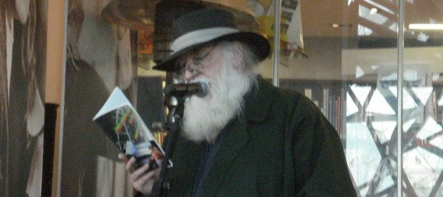<br>
      </div>
      <br>
      <br>
      <table style="text-align: left; width: 100%;" border="0" cellpadding="2" cellspacing="5">
        <tbody>
          <tr>
            <td></td>
            <td><a href="lean.html#Shelton_reads"><big style="text-decoration: underline;"><big><span style="font-family: Helvetica,Arial,sans-serif;">Shelton Lea
reads from Nebuchadnezzar</span></big></big></a></td>
          </tr>
          <tr>
            <td></td>
            <td><a href="riethw.html#Homer_reads_Wimmera"><big><big><span style="font-family: Arial;">Homer Rieth reads Wimmera</span></big></big></a></td>
          </tr>
          <tr>
            <td></td>
            <td style="font-family: Arial;"><big><a href="rieth.html#RiethInterview17Jan16"><big>Homer
Rieth: Interview ABC Radio Darwin Sunday 17 January 2016</big></a></big></td>
          </tr>
          <tr>
            <td></td>
            <td><a href="harrison.html#HarrisonCR1April14"><big><big style="font-family: Arial;">Jennifer
Harrison:
Interview and reading, 3CR 1 April 2014</big></big></a></td>
          </tr>
          <tr>
            <td></td>
            <td><a href="jeffsc.html#JeffsInterviewAndReading2015"><big><big style="font-family: Arial;">Sandy Jeffs: Interview and
reading, Writer's Radio on Radio Adelaide&nbsp;June 27th 2015</big></big></a></td>
          </tr>
        </tbody>
      </table>
      <br>
      <div style="text-align: right;"><small style="font-weight: bold; background-color: white; font-family: Helvetica,Arial,sans-serif;"><a href="index.html#top">BABC_Evenings_30Oct2019.mp3</a></small><small style="font-weight: bold; background-color: white; font-family: Helvetica,Arial,sans-serif;"><a href="index.html#top">ack to top</a></small> <br>
      <comment title=" Start of StatCounter Code " xmlns="http://disruptive-innovations.com/zoo/nvu"><!-- Start of StatCounter Code --></comment></div>
      </td>
    </tr>
  </tbody>
</table>

<script type="text/javascript" language="javascript" src="http://www.statcounter.com/counter/counter.js"></script>
<noscript> </noscript><!-- End of StatCounter Code -->
